Dit is een werkversie die op elk moment kan worden gewijzigd, verwijderd of vervangen door andere documenten. Het is geen stabiel document.
1. Introductie
Building Information Modelling (BIM) en Geografisch informatiesystemen (GIS) worden algemeen erkend als aanvullende bronnen van informatie. Waar BIM modellen worden gebruikt om een enkel gebouw, bouwwerk of kunstwerk in hoog detail te representeren worden GIS modellen gebruikt om grotere regio's te representeren met minder detail. Het integreren van deze twee databronnen kan zeer nuttig zijn voor zowel de BIM als GIS wereld.
Ondanks het feit dat BIM en GIS gedeeltelijk dezelfde bouwwerken, infrastructuur of constructie modelleren op verschillende schaal en detail niveau is de integratie tussen beide werelden lastig. Beide velden hebben een andere modelleer benadering die overbrugd moet worden om succesvol BIM-modellen naar GIS te brengen.
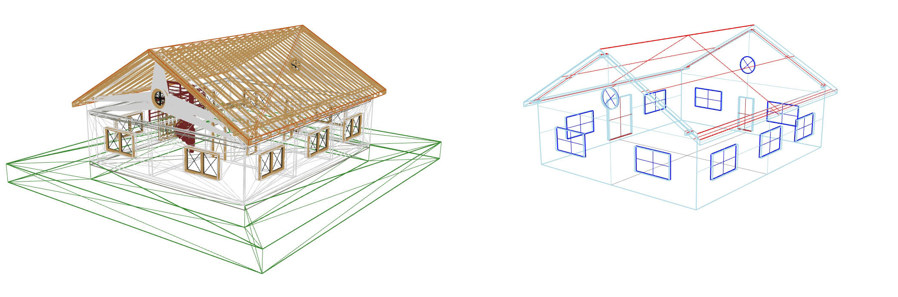
Figuur 1Een wireframe representatie van een BIM model (links) en een exterieur GIS model (rechts).
Het essentiële verschil tussen BIM en GIS is dat in BIM alle objecten los van elkaar en als volumes gemodelleerd zijn. Iedere wand, deur en vloer zijn losse, gesloten objecten. In GIS wordt een gebouw daarentegen gerepresenteerd als een enkel gesloten object. Er is geen scheiding tussen verschillende objecten die samen het gebouw vormen. Er zijn verschillende manieren om dit verschil te overbruggen. Er zijn bijvoorbeeld softwarepakketten die het mogelijk maken om BIM modellen en GIS modellen in dezelfde omgeving te openen. Dit is vrij makkelijk voor de gebruiker en stelt weinig eisen aan de BIM modellen. De keerzijde is dat dit de mogelijkheden beperkt om de BIM modellen in de GIS omgeving te gebruiken (analyseren) en het bindt de gebruiker vaak aan een enkele software omgeving/leverancier. Er zijn software pakketten die het mogelijk maken om BIM modellen (gedeeltelijk) 1:1 te vertalen naar een GIS data formaat. Ook dit stelt relatief weinig eisen aan de BIM modellen maar resulteert in modellen die vooral voor visualisatie bruikbaar zijn. Als laatste zijn er software oplossingen die BIM modellen omzetten naar GIS conforme bestanden. Deze oplossingen resulteren in goed bruikbare GIS modellen, maar stellen relatief strenge eisen aan de BIM modellen die gebruikt kunnen worden als input.
De laatste oplossing is interessant voor het integreren van BIM in een GIS omgeving. Helaas zijn de eisen waaraan de BIM modellen moeten voldoen om tot een goed resultaat te leiden vaak onduidelijk en slecht gedocumenteerd. Er moeten extra, aanvullende stappen genomen worden om aan deze eisen te voldoen omdat niet alle BIM modelleersoftware modellen op een correcte manier opslaat. Vaak is een expert nodig om de BIM modellen aan te passen voordat ze voldoen aan alle eisen om tot een goed conversie resultaat te komen. Echter is deze complexe omzetting niet altijd nodig voor het uiteindelijke doel van het model. Als enkel simpele analyses of visuele representaties nodig zijn kunnen andere omzettingen zoals een 1:1 vertaling ook uitkomst bieden.
De uitdaging van fundamentele oplossingen voor Geo- en BIM- integratie, is het ontwikkelen van breed gedragen, gestandaardiseerde oplossingen voor conversie en vereiste modellering met duidelijke handreikingen zodat de BIM-naar-Geo oplossingen ook beschikbaar komen voor klein-tot-middelgrote projecten waar niet altijd de benodigde expertise beschikbaar is.
1.1 Leeswijzer
1.2 Toepassingsgebied
2. Achtergrondinformatie
2.1 Soorten informatie
Zowel BIM- als Geo-modellen maken deel uit van een breder informatielandschap. In de ISO 19650-1 wordt informatie in drie soorten onderverdeeld:
Geometrisch: 2D- of 3D-modellen, met bijvoorbeeld vormen en hun dimensies
Alfanumeriek: Gestructureerde data die niet over geometrieën gaat, zoals de kenmerken van objecten.
Documentatie: Ongestructureerde data zoals PDF-bestanden en foto's.
Deze soorten informatie worden ieder op een andere manier verwerkt, zowel door mensen als software. Het maken van dit onderscheid helpt daarmee ook om de juiste keuzes te maken bij het converteren en beheren van informatie. De nadruk van deze praktijkrichtlijn ligt op geometrische informatie, maar de overige soorten zullen ook behandeld worden.
2.1.1 Documentatie
Omdat documentatie ongestructureerde data bevat, kan deze niet uitgedrukt worden in BIM- of GIS-standaarden. Hierdoor is dit soort informatie ook niet geschikt voor conversie. Er kan wel een link bestaan tussen (geometrische) objecten en documenten (bijvoorbeeld IfcRelAssociatesDocument in IFC of externalReference in CityGML). Het kan nodig zijn om documenten die gekoppeld zijn aan een BIM model ook te behouden in een Geo-context.
2.1.2 Alfanumeriek
Alfanumerieke informatie kan op allerlei plaatsen en vormen worden bijgehouden. De scheiding tussen alfanumerieke en overige informatie wordt daarom vaak ook niet zo scherp gemaakt in de praktijk. Zo kan het materiaal of bouwjaar van een object als attribuut in een BIM- of GIS-model opgenomen zijn, in een PDF of spreadsheet staan, of als gestructureerde data in een apart systeem beheerd worden. Ook kunnen objecten geclassificeerd worden naar diverse classificatie-systemen, zoals NL-SfB, NLCS of IMBOR.
Bij de stap van BIM naar Geo is het technisch goed mogelijk om alle kenmerken over te nemen, zolang objecten ook 1-op-1 overgenomen worden. De vraag is alleen welke informatie daadwerkelijk relevant is. In een IFC-model kunnen bijvoorbeeld gedetailleerde kenmerken zitten over materiaaleigenschappen of fabrikantdata. Voor het meeste GIS-gebruik is deze informatie niet relevant en zal deze voornamelijk extra ruis opleveren. In deze praktijkrichtlijn zullen een aantal best practices benoemd worden om hiermee om te gaan.
2.2 BIM & GEO modellen
BIM en GIS modellen spelen ieder een unieke rol die onlosmakelijke met elkaar verbonden zijn. BIM modellen representeren een gebouw op een architectonische schaal terwijl GIS modellen hetzelfde gebouw representeren op een stedelijke schaal. De gebouwen gemodelleerd in BIM modellen hebben een hoog detail niveau. Objecten zoals kozijnen, deurklinken en scharnieren zijn op een gedetailleerde en precieze manier gemodelleerd. GIS objecten die dezelfde gebouwen representeren zijn veel simpeler. Kleine details die aanwezig zijn in BIM modellen worden over het algemeen niet, of niet expliciet, gemodelleerd in GIS.
Er zijn een aantal redenen voor deze verschillen:
Een GIS model bevat informatie over grote clusters van gebouwen, mogelijk zelfs van complete steden. De informatie opslaan op een BIM schaal voor deze gebieden zal zeer zware modellen opleveren die lastig, zo niet onmogelijk, zijn om mee te werken.
GIS data/formats zijn ontwikkeld om te werken met andere bronnen dan BIM data. Waar in BIM vaak met de hand wordt gemodelleerd (al dan niet aangevuld door programmeren/ai) worden de meeste GIS modellen gebaseerd op metingen. Voor gebouwen zijn deze metingen vaak LiDAR scans. Deze scans kunnen ruis in de data, en occlusion (gaten in de metingen) bevatten en hebben een beperkte resolutie. Met deze data is het niet mogelijk om snel op grote schaal zeer gedetailleerde modellen te creëren.
GIS modellen spelen, vaker, een publieke rol dan BIM data. GIS data is beschikbaar voor gebruikers om te downloaden en te verwerken. Als GIS data alle informatie over de opgeslagen gebouwen zou bevatten, zoals in BIM modellen, zou dit mogelijk tot data veiligheidsproblemen leiden. Aanvullend zal er dan ook zoveel data beschikbaar zijn, waardoor de gebruiker door het bomen het bos niet meer kunnen zien. Bovendien zit in BIM modellen data waarvoor het niet in het belang van de ontwerper is om deze data te delen. Op deze data kunnen auteursrechten rusten.
Om enerzijds in een GIS-omgeving te kunnen worden toegepast en anderzijds in een BIM-omgeving, zijn GIS-data respectievelijk BIM-data op een verschillende manier opgebouwd. Geometrisch gezien is een gebouw in een BIM model geconstrueerd uit verschillende losse objecten. Wanden, vloeren en deuren zijn allemaal volumetrische objecten die samen een bouwwerk vormen. In GIS modellen is deze omsluiting gerepresenteerd als een enkel object. Losse objecten, zoals losse wanden, vloeren en deuren, komen in GIS modellen relatief weinig voor. Een gebouw in GIS kan worden gezien als een gesloten schil die de grens tussen het gebouw en de lucht aanduidt.
Figuur 2 Een wireframe representatie van een BIM model (links) en een exterieur GIS model (rechts).
De manier waarop ruimtes binnen het gebouw worden gerepresenteerd, zijn daarentegen wel vergelijkbaar tussen BIM en volumetrische GIS modellen. Beide gebruiken een enkele volumetrische vorm om een unieke ruimte binnen een gebouw aan te duiden. Deze volumetrische vorm kan worden gezien als een gesloten schil die de grens tussen het gebouw en de lucht van een ruimte aanduidt of een ruimte in een gebouw.
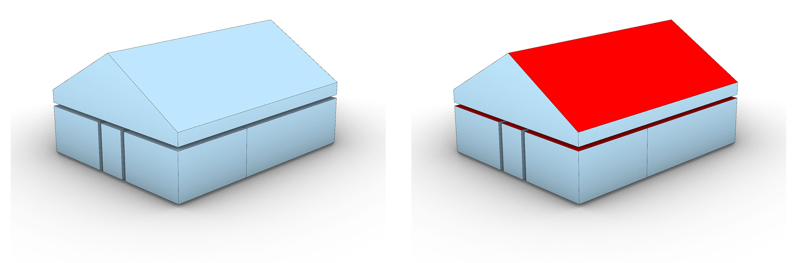
Figuur 3 Representatie van de kamers in een BIM model (links) en GIS model (rechts).
Over het algemeen is een gebouw in een BIM-bestand op het hoogst beschikbare detailniveau gerepresenteerd. In een GIS-bestand is dit vaak niet het geval. Een gebouw kan op meerde manieren gerepresenteerd worden in een enkel GIS-bestand. Dit kan variëren van (vanuit GIS bezien) zeer gedetailleerde volumetrische vormen tot zeer versimpelde non-volumetrische oppervlakte. Deze variatie in representaties is aanwezig om toepassingen op verschillende detailniveaus mogelijk te maken, maar ook omdat GIS data bronnen niet altijd alle data beschikbaar hebben om alle bouwwerken op dezelfde manier te reconstrueren. Het is dus mogelijk om lagere precisie data te combineren met hogere precisie data indien er beperkte data bronnen beschikbaar zijn. Om de verschillende kwaliteit van de representaties aan te duiden wordt de term “Level of Detail” (LoD) gebruikt in 3D GIS. In BIM is er ook een manier om de granulariteit van decompositie en detail te duiden. Hier voor kan men het Level Of Information Need (LOIN) gebruiken en/of het Level Of Development (LOD) en Level of Detail (LOD). Dat de termen GIS Level of Detail en BIM Level of Detail en Level Of Development dezelfde afkorting (LoD) gebruiken, zorgt soms voor verwarring.
2.2.1 Level of Information Need en Level Of Development in BIM
De ISO 19650, de procesnorm voor informatiemanagement, schrijft voor dat in het BIM-werk een Level of Information Need moet worden gedefinieerd. In de ISO 7817-1:2024 staat beschreven hoe men dat doet. Voor geometrische informatie worden binnen het BIM-domein afspraken gemaakt over:
Level Of Information Need aspecten
Aspect
Beschrijving
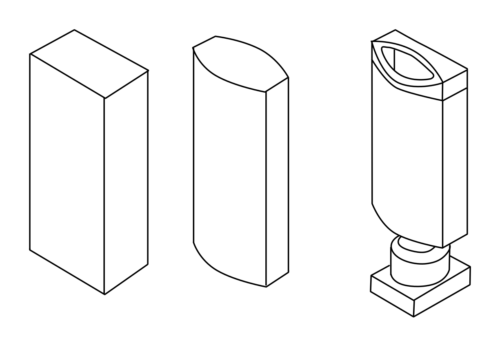
Detail
Het aspect detail beschrijft de complexiteit van de geometrie van het object in relatie tot het voorkomen van dit object in de echte wereld.
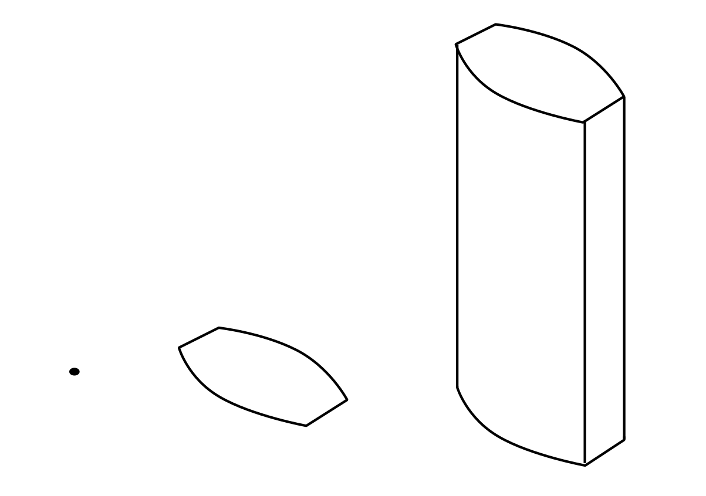
Dimensie
Dit aspect beschrijft de dimensies waarmee objecten worden weergegeven. Dit kan 0D, 1D, 2D of 3D zijn. Zelfs hogere dimensies zijn mogelijk wanneer bijvoorbeeld tijd, of meting wordt toegevoegd.
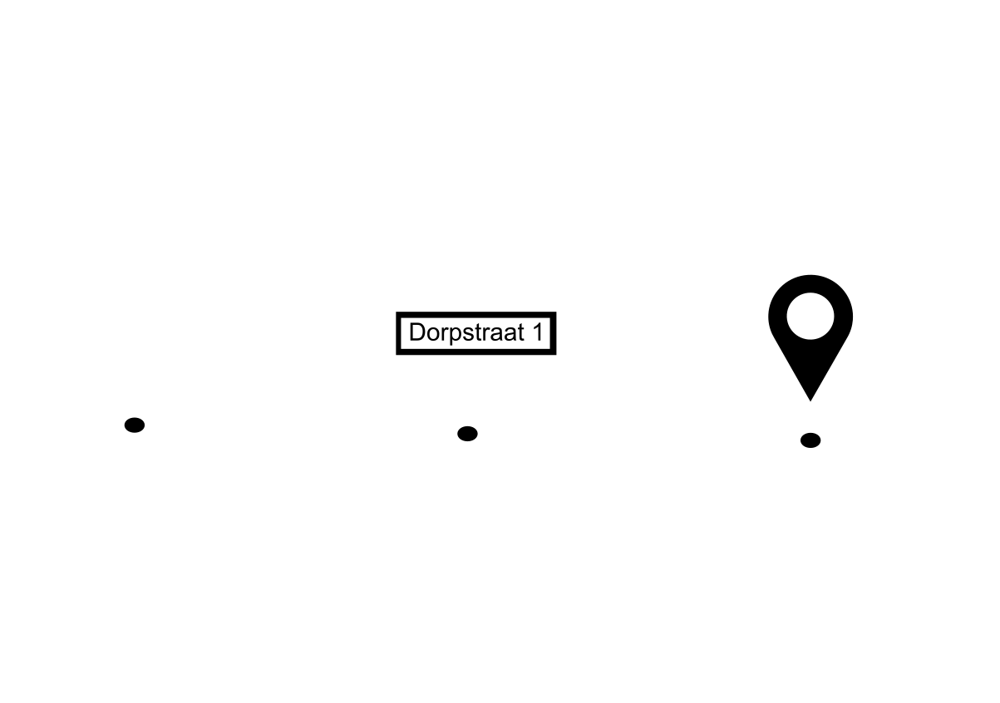
Locatie
Het aspect locatie beschrijft de manier waarop geometrie een locatie heeft. Dit kan absoluut zijn met eigen coordinaten of t.o.v. een ander object.
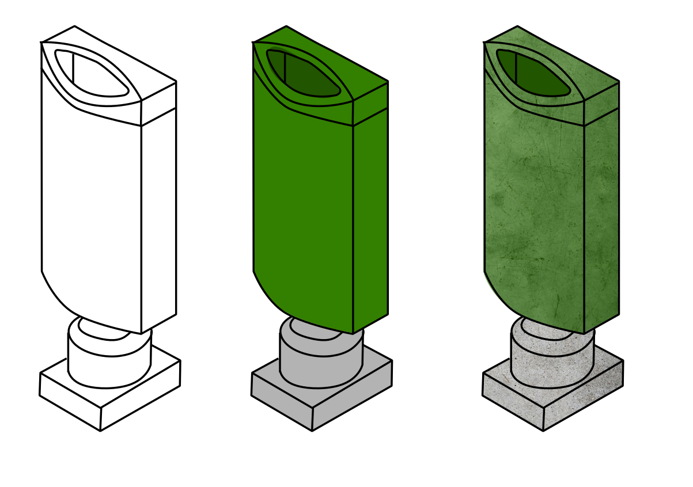
Voorkomen
Het aspect voorkomen beschrijft of het object een kleur of textuur heeft ten opzichte van het voorkomen in de echte wereld.
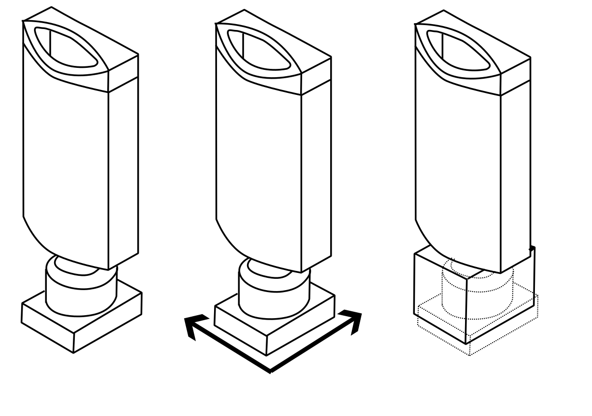
Parametrische Functionaliteit
Dit aspect beschrijft de parametrische functionaliteit die een object heeft. Kan men deze nog aanpassen, en hoe?
Ook maakt men naast de hierboven genoemde aspecten afspraken over decompositieniveau. Tekent men een afvalbak als één geheel object, bestaat deze uit één losse bak en één losse poer of is deze nog verder gedecomponeerd?
Naast het hierboven beschreven Level Of Information Need bestaat binnen het BIM-domein het Level Of Development (LOD). Dit Level of Development is gedefinieerd door het American Institue of Architects (AIA) en doorontwikkeld door het BIMForum. Dit wordt gebruikt om het ontwikkelniveau aan te duiden van zowel de geometrie als de verbonden informatie in een BIM model. Er bestaan verschillende intrepetaties over hoeveel LOD niveaus er zijn en wat de inhoud hiervan precies betekent. Om hier meer eenduidigheid in te krijgen heeft het BIM-forum een update van de definities geleverd. De ontwikkelniveaus die onderscheiden worden zijn:
LOD100 - Concept niveau
Het model bevat: Generieke massa van een bouwwerk. Oppervlakte, hoogte, inhoud, volume, locatie en orientatie kunnen worden gemodelleerd in 2D, 3D of ander soort data.
Het model is bedoeld voor: Analyse, kostenramingen of planning.
Geometrie: Conceptuele massa's van het totaal model en symbolische elementen. Informatie over elementen kunnen afgeleid worden uit andere model elementen (b.v. het aantal verdiepingen kan men afleiden uit een 3D gebouwmodel)
LOD200 - Globale geometrie
Het model bevat: Elementen van het model zijn gemodelleerd als geabstraheerde systemen of samenstellingen met benaderde hoeveelheden, afmetingen, vorm, locatie en orientatie. Niet-geometrische informatie kan aan het model gekoppeld worden.
Het model is bedoeld voor: Analyse, kostenramingen of planning.
Geometrie: Gemodelleerde elementen kunnen worden gezien als abstracte ruimtereserveringen, vaak als herkenbaar element. Het afleiden van informatie uit deze modellen is een schatting/benadering.
LOD300 - Nauwkeurige geometry
Het model bevat: Elementen van het model zijn gemodelleerd als nauwkeurige systemen of samenstellingen met accurate hoeveelheden, afmetingen, vorm, locatie en orientatie. Niet-geometrische informatie kan aan het model gekoppeld worden.
Het model is bedoeld voor: Constructie, analyse, kostenramingen of planning.
Geometrie: Gemodelleerde elementen kunnen vanuit het model worden gemeten zonder niet gemodelleerde informatie te raadplegen om tot goed resultaat te komen. Het element heeft de juiste positionering t.o.v. het Project Basepoint.
LOD350 - Nauwkeurige geometry (met aansluiting)
Het model bevat: Elementen van het model zijn gemodelleerd als nauwkeurige systemen of samenstellingen met accurate hoeveelheden, afmetingen, vorm, locatie en orientatie. En heeft de koppeling naar andere elementen van systemen of samenstellingen. Niet-geometrische informatie kan aan het model gekoppeld worden.
Het model is bedoeld voor: Constructie, analyse, kostenramingen of planning.
Geometrie: Onderdelen die nodig zijn voor ondersteuning, verbinding of aansluiting met andere elementen zijn gemodelleerd. Gemodelleerde elementen kunnen vanuit het model worden gemeten zonder niet gemodelleerde informatie te raadplegen om tot goed resultaat te komen. Het element heeft de juiste positionering t.o.v. het Project Basepoint
LOD400 – Adapted to realization/ execution
Het model bevat: Elementen van het model zijn gemodelleerd als nauwkeurige systemen of samenstellingen met accurate hoeveelheden, afmetingen, vorm, locatie, orientatie en complete fabricatie, samenstellign en detail informatie. Niet-geometrische informatie kan aan het model gekoppeld worden.
Het model is bedoeld voor: Constructie, analyse, kostenramingen of planning.
Geometrie: Onderdelen hebben voldoende detail en nauwkeurigheid voor fabricage/constructie. Onderdelen die nodig zijn voor ondersteuning, verbinding of aansluiting met andere elementen zijn gemodelleerd. Gemodelleerde elementen kunnen vanuit het model worden gemeten zonder niet gemodelleerde informatie te raadplegen om tot goed resultaat te komen. Het element heeft de juiste positionering t.o.v. het Project Basepoint
LOD 500 – “as built”
Het model bevat: Elementen van het model zijn gemodelleerd als construeerde samenstellingen met accurate en actuele hoeveelheden, afmetingen, vorm, locatie, orientatie. Niet-geometrische informatie kan aan het model gekoppeld worden.
Het model is bedoeld voor: Generiek gebruik
Geometrie: Dit level is geen "extra level" dat iets extra toevoegt op de voorgaande LOD's, maar is een afronding van alle voorgaande LOD's. Aangevuld met de werkelijke uitvoering van het bouwwerk.
Elke opvolgende LOD bouwt voort op het vorige level. Een BIM-model kan verschillende LOD's voor verschillende elementen in één model bevatten.
Voorbeeld van de verschilende LOD's van één kolom.
Level Of Information Need en Level Of Development vullen elkaar aan. De Levels Of Development kunnen worden gebruikt om het detailniveau van een object te duiden in het LOIN Raamwerk.
2.2.2 Level of Detail (LoD) Framework in GIS
In GIS wordt “Level of Detail” gebruikt om aan te geven hoe gedetailleerd een GIS model is in relatie tot het object in werkelijkheid. Het onderscheidt zich van BIM Level of Development omdat informatie buiten de geometrie, zoals attributen of documenten van minder belang zijn voor de classificatie.
De GIS Level Of Details worden gedefinieerd in de CityGML3.0 standaard. De standaard definieert 4 hoofdniveaus, LOD0 tot LOD3. Hierbij krijgt de geometrie van een model bij hoger LOD niveau meer detail. De hoofdniveaus worden breed ondersteund in toepassingen.
De documentatie van CityGML over LOD is algemeen. De volgende definitie kunnen worden gegeven ten aanzien van gebouwen:
LoD van een gebouw zoals beschreven in de CityGML3.0 standaard
Level
Beschrijving
LoD0
Een representatie van een gebouw of vertrek met niet volumetrische geometrie zoals een punt, vlak (polygoon) of meerdere vlakken (voor bijvoorbeeld de 'footprint' of 'roofprint').
LoD1
Een representatie van een gebouw of vertrek als een blok/prisma vorm.
LoD2
Een representatie van een gebouw of vertrek als een volume met (meestal) verticale muren, waarbij de vlakken die het dak representeren zijn verfijnd.
LoD3
Een representatie van een gebouw of vertrek als een schil of een collectie van constructieve elementen. Dit is de enige LoD die gevelopeningen ondersteunt.
De in CityGML3.0 standaard beschreven LoDs kunnen worden gebruikt voor zowel exterieur als interieur. In CityGML 2.0 was er een aparte LoD die interieur ondersteunde, LoD4. Deze was anders opgebouwd dan LoD0-3. LoD0-3 kent een structuur waarbij de buitenkant een enkele schil is die het model representeert. LoD4 volgt een BIM achtige structuur waarbij de representatie van het gebouw bestaat uit losse objecten. LoD4 kan worden geïnterpreteerd als een (gefilterde) 1:1 conversie van een BIM model.
In CityGML3.0 is de rol van LoD3 veranderd om de BIM achtige structuur te ondersteunen die voorheen onder LoD4 viel. Dit betekent dat LoD3 kan zijn opgebouwd als een schil model maar ook als een collectie van constructieve elementen. Ondanks het feit dat LoD4 officieel niet meer wordt ondersteund, komt het in de praktijk nog voor. In deze modellen is LoD3 opgebouwd als een schil model en LoD4 een als een collectie van constructieve elementen.
In de praktijk wordt het LoD framework vooral gebruikt voor gebouwen. Bouwwerken zoals bruggen, tunnels en sluizen worden in de documentatie niet zo uitgebreid beschreven als gebouwen. In theorie kunnen de LoDs ook toegepast worden op deze bouwwerken omdat het LoD framework van CityGML open en flexibel is. De verschillend LoD abstracties van infrastructurele bouwwerken lijken minder bruikbaar omdat gebouwen en infrastructuur bouwwerken erg van vorm verschillen. Er zijn wel initiatieven om LoDs van andere type objecten dan bouwwerken te definieren, zoals voor vegetatie, infrastructuur/transport en terrein. Deze worden ook gebruikt in de praktijk, ook al is dat minder dan de LoDs voor gebouwen.
Verfijnd LoD framework 3D Geoinformation, TU Delft
Het CityGML LoD framework is relatief open en generiek. Dit maakt het makkelijk om een model in het framework te passen. Maar daarmee is het soms ook moeilijk om precies vast te stellen hoe een abstractie verschilt van het originele gebouw in de werkelijkheid. In 2016 heeft Biljecki et al. daarom een verfijning geschreven die voortbouwt op het CityGML LoD framework. Dit is gedaan door iedere CityGML LoD op te splitsen in 4 sub groepen. Zo is LoD1 opgesplitst in LoD1.0, 1.1, 1.2 en 1.3. Het eerste nummer van de verfijnde LoD komt overeen met de CityGML LoD. Het tweede nummer geeft de verdere verfijning aan. De documentatie van de verfijnde LoD is uitgebreider dan die van de CityGML standaard. Ontwikkelingen in 3D data inwinning en modellering alsmede gebruik in de praktijk en de zo opgedane ervaringen, leiden voortdurend tot inzichten die de standaard en LoD beschrijvingen kunnen verbeteren.
Op basis van meerdere bronnen kunnen de LoDs van het verfijnde framework op de volgende manier worden gedefinieerd:
Uitbreiding van het LoD Framework
Level
Beschrijving
LoD0.0
Een 2D bounding surface om een gebouw of cluster van gebouwen.
LoD0.1
Een 2D projectie van alle "grote" elementen van een gebouw (>4m, > 10m2) geplaatst op grondniveau.
LoD0.2
Een 2D projectie van alle elementen van een gebouw geplaatst op grondniveau en optioneel aangevuld door een 2D projectie op dakhoogte.
LoD0.3
Een 2D projectie van alle elementen van een gebouw geplaatst op grondniveau en aangevuld met een 2D projectie van alle losse dakelementen geplaatst op de tophoogte van ieder element.
LoD1.0
Een bounding box om een gebouw of cluster van gebouwen.
LoD1.2
Een opwaartse extrusie van het LoD0.2 grondoppervlak naar de maximale gebouwhoogte (vaak de noklijn), waarbij kleinere details ook worden meegenomen (zoals uitstulpingen).
LoD1.3
Een neerwaartse extrusie van ieder LoD0.3 dakelement, indien deze een minimaal hoogtesprong hebben (bijvoorbeeld 2m) tot grondniveau en samengevoegd tot een enkel volum
LoD2.0
Een neerwaartse extrusie van ieder groot dak element (>4m, > 10m2) tot grondniveau samengevoegd tot een enkel volume.
LoD2.1
Een neerwaartse extrusie van ieder dak element tot grondniveau samengevoegd tot een enkel volume. Het verschil met LoD2.0 is dat kleine details zoals uitstulpingen (groter dan 2 vierkante meter) ook worden meegenomen
LoD2.2
Een neerwaartse extrusie van ieder dak element en dak bovenbouw (zoals dakkapellen) met minimale omvang tot grondniveau samengevoegd tot een enkel volume.
LoD2.3
LoD2.2 uitgebreid met expliciet gemodelleerde overhang als deze groter is dan bijvoorbeeld 0.2m. In dit geval worden dus de werkelijke geometriën van roofprints en footprints gebruikt, waardoor het volume nauwkeuriger is
LoD3.0
LoD2.2 aangevuld met gedetailleerde informatie over dakstructuren, zoals ramen op het dak. Dakkapellen of ramen in muren worden niet meegenomen.
LoD3.1
LoD2.2 aangevuld met gedetailleerde informatie verkregen vanaf de grond,d.w.z. terristrische inwinning (in tegenstelling tot LoD3.0). Deze LoD kan uitkragingen/overhang, ramen en deuren bevatten, met LoD3.2 detail op de gevel (façade).
LoD3.2
Gedetailleerd schilmodel van het gebouw met elementen die groter zijn dan (bijvoorbeeld) 1m.
LoD3.3
Gedetailleerd schilmodel van het gebouw met elementen die groter zijn dan (bijvoorbeeld) 0.2m.
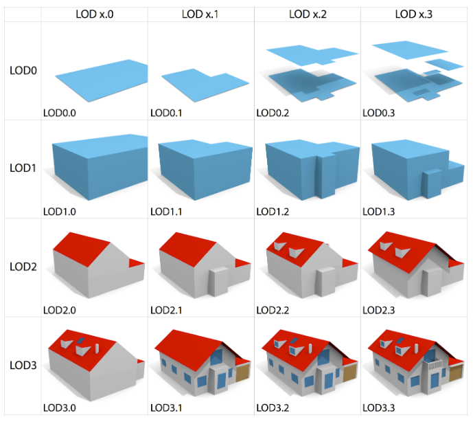
Figuur 7
Voorbeeld van de 16 LoD's beschreven door de TU Delft in 2016.
Het framework is niet altijd expliciet over het gebruik van een footprint of geprojecteerde dak contour bij de verschillende LoD-representaties. In de documentatie wordt het, in praktijk veel gebruikte, geprojecteerde dak contour bij LoD0.2, LoD0.3 en LoD1.2 genoemd, omdat deze 3D modellen vaak op basis van data inwinning vanuit de lucht worden gegenereerd. Maar het gebruik van de footprint wordt niet uitgesloten. In de praktijk wordt soms ook de footprint contour gebruikt als deze voorhanden is. De footprint-gebaseerde geometrie kan worden uitgebreid naar LoD1.3 en/of 2.2 waar een volumetrische vorm wordt gegenereerd door een opwaartse extrusie van de footprint, welke wordt verfijnd met dakvlakken.
Net zoals bij het CityGML LoD framework is dit framework ontwikkeld voor gebouwen en niet voor infrastructurele bouwwerken zoals bruggen, tunnels en sluizen. In theorie kunnen de LoDs toegepast worden op deze bouwwerken omdat het framework open en flexibel is, maar dit vraagt om verdere verfijningen en afspraken.
2.2.3 Uitbreidingen & aanpassingen van de LoD frameworks
Zowel het CityGML LOD Framework als het TU Delft verfijnde framework worden beide gebruikt in de praktijk. Modellen die in de praktijk beschikbaar zijn passen soms niet helemaal op deze LoD frameworks, mede omdat er recent technologieën beschikbaar zijn gekomen die het mogelijk maken om nieuwe data bronnen te gebruiken om GIS modellen te genereren. Bij het opstellen van de eerdere frameworks, werd uit gegaan van metingen om de LOD's te vormen. De CityGML1.0 LoD standaard werd geïntroduceerd in 2008 en versie 3.0 is nog steeds in grote lijnen vergelijkbaar met de 1.0 versie. De TU Delft verfijning is uit 2016. Het is daarom ook belangrijk dat er onderzoek gedaan wordt naar uitbreidingen en aanpassingen van deze twee bestaande LoD frameworks afgestemd op nieuwe mogelijkheden.
Voor de voorliggende praktijkrichtlijn is het met name relevant om te kijken naar BIM als databron voor 3D-GIS-bestanden en hoe en welke bestaande, nieuwe of aangepaste LoDs hiermee kunnen worden gegenereerd.
In 2025 is er onderzoek gedaan naar mogelijke aanvullende LoDs voor GIS modellen die rekening houden met BIM als databron. In de rapportage van het onderzoek naar een BIM2GEO convertor vindt men in appendix 7 de implementatie van het TUD LoD framework in de BIM2GEO converter. Er zijn kleine aanpassingen gedaan in het LoD framework zodat men rekening kan houden met de unieke beperkingen, maar vooral ook mogelijkheden van BIM modellen.
LoD1 & 1.0 vorm
In de CityGML3.0 standaard wordt LoD1 beschreven met "LOD1 – Block model / extrusion objects". Een extrusie model kan, afhankelijk van de vorm van het gebouw en afhankelijk van welk detail wordt meegenomen, een verschillende resulterende vorm hebben. Biljecki et al. hebben de LoD1 definitie verfijnt door deze definitie op te splitsen o.a. door het detail niveau dat wordt meegenomen, zoals uitstulpingen en significante hoogtesprongen. Volgens Biljecki et al.: " ... LOD1.0 are the coarsest models: they require all buildings larger than 6 m to be acquired, and buildings may be aggregated". Deze beschrijving maakt duidelijk dat LoD1.0 een blokmodel is, maar op basis waarvan de extrusie precies plaats vindt is niet altijd expliciet.
Voetafdruk of dakomtrek als extrusie bron
LoD1, 2, 1.2, 1.3, 2.1, 2.2 en 2.3 zijn vormen die gemaakt zijn door een oppervlak te extruderen. Het is van belang dat gespecificeerd wordt welke oppervlaktes de basis vormen voor het genereren van deze vorm. Een model dat gebaseerd is op de voetafdruk zal in de meeste gevallen een andere vorm hebben dan als het model is gebaseerd op de dak omtrek. Veel gebouwen hebben een dak dat over de gevel (en de voetafdruk) heen uitsteekt. Bij deze gebouwen zal een extrusie gebaseerd op de dak omtrek dus groter uitvallen dan een extrusie gebaseerd op de voetafdruk. De keuze om òf voetafdruk òf dak omtrek te gebruiken, is meestal afhankelijk van welk van beide voor handen is. Het is belangrijk om hier expliciet in te zijn.
In de CityGML3.0 standaard wordt de voetafdruk genoemd als bronoppervlak voor de extrusie: "LOD 1: Volumetric real-world objects (Spaces) are spatially represented by a vertical extrusion solid, i.e., a solid created from a horizontal footprint by vertical extrusion. A real real-world objects (Space Boundaries) can be spatially represented in LOD1 by a set of horizontal or vertical surfaces.".
Voor de buitenschil worden in de CityGML standaard en de verfijning van Biljecki et al. beide opties genoemd: "LOD0 is a representation of footprints and optionally roof edge polygons marking the transition from 2D to 3D GIS. LOD1 is a coarse prismatic model usually obtained by extruding an LOD0 model.". Op basis van deze text zou een LoD1 zowel gebaseerd kunnen zijn op de voetafdruk als de dak omtrek. Een aantal uitbreidingen voor LoD1.2, 1.3 en de 2.x groep worden beschreven, maar dit gaat niet in op wat het bronoppervlak voor de extrusie is.
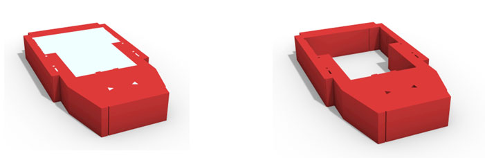
Figuur 8
Deze LoD1.2 representatie van het aula gebouw van de TU Delft is gebaseerd op de dakomtrek (Links). Met rood is het deel is aangeven dat zou vervallen ten opzicht van een voetafdruk gebaseerde extrusie. Het vervallende deel is rechts geïsoleerd weergegeven. Het verschil in volume tussen de twee resulterende vormen is ongeveer 54.000m3
Welk bronoppervlak als basis wordt gebruikt, wordt niet altijd expliciet gemaakt. In Nederland wordt veelal gebruik gemaakt van de BAG als extrusie bron, zoals voor 3DBAG
De 2DBAG beschrijft de geometrie van een pand als volgt: "De geometrie betreft het loodrechte bovenaanzicht van het object met de ware vorm, afmeting en oriëntatie en positie ten opzichte van de aarde, inclusief alle zichtbare en onzichtbare delen boven en onder de grond, maar exclusief alle delen die kunnen bewegen ten opzichte van de aarde."
Dit valt samen met de grootste geprojecteerde omtrek, gezien van bovenaf. Deze 2D geometrie valt niet altijd samen met de voetafdruk, zeker niet als er sprake is van een aanzienlijke dakoversteek. De BGT daarentegen modelleert maaiveldgeometrie van elk pand waarbij de geometrie de begrenzing van een pand aangeeft daar waar het de grond raakt. Dat valt samen met de voetafdruk.
Op het faculteitsterrein van de TU Delft staan twee gebouwen waarbij de BAG-geometrie duidelijk worden gemaakt.
Figuur 9
Voorbeeld van het gebruik van 2DBAG als bronoppervlaktes voor de extrusie in het 3DBAG. Links in de figuur is de aula van de TU Delft gevisualiseerd, de 3DBAG representatie van dit gebouw is gebaseerd op de 2DBAG (d.w.z. de grootste omtrek van bovenaf welke samenvalt met de dakomtrek). Rechts is gebouw Echo, de twee halfronde kokers aan de voorgevel in de 3DBAG representatie vallen buiten de geprojecteerde dak omtrek maar wel binnen de grootste omtrek vanaf boven gezien. De draaideuren van de entree zijn onderdeel van de 2DBAG geomtrie en daardoor ook de basis voor de extrusie in 3DBAG.
Zowel de voetafdruk als de dak omtrek als de buitenste geprojecteerde voetafdruk zijn bruikbaar, maar op dit moment is het vaak onduidelijk voor de gebruiker welk oppervlak als bron voor de extrusie wordt gebruikt.
NB1: Uit de definitie van de 2DBAG geometrie volgt ook dat ondergrondse onderdelen worden meegenomen in de 2D geometrie zoals ondergrondse parkeergarages. Bij de 3DBAG reconstructie worden deze pand-delen uit de geometrie gefilterd op basis van de hoogte data op deze locaties.
NB2: Voor de 3DBAG is gekozen voor 2DBAG als extrusiebron en niet BGT, omdat 2DBAG, net als AHN een bovenaanzicht geeft van de panden. Daarom passen beide data bronnen goed op elkaar. Er loopt momenteel een onderzoek om onderdoorgangen en dakoverhang te modelleren in 3DBAG door deze te detecteren op basis van een BGT-BAG analyse en de hoogte vervolgens te detecteren in oblieke luchtfoto's.
Noot: Maak aanvullende afspraken rondom voetafdruk of dakomtrek
2.3 Bestandsformaten
Wanneer men een conversie wil doen van open BIM naar open GEO kan men van verschillende bestandsformaten gebruik maken. Hieronder zijn een aantal belangrijke bestandsformaten beschreven voor het converteren van open BIM naar open GEO.
2.3.1 CityGML XML & CityGML CityJSON
CityGML is een open conceptueel datamodel voor het opslaan van 3D Geo data. CityGML defineert verschillende objecten (classes) en hun relaties voor de meest relevante topografische objecten zoals gebruikt in stedelijke en regionale modellen. In tegenstelling tot mesh bestand types zoals OBJ en STL maakt CityGML het mogelijk om ook attributen voor ieder object op te slaan.
Naast een datamodel is CityGML ook een data encoding. De gelijke benaming van het datamodel en data encoding kan tot verwarring leiden. Voor het conceptuele data model CityGML, is zowel een GML, JSON als RDF encoding beschikbaar.
De GML encoding is gebaseerd op een XML datamodel. XML is een vrij zwaar datatype wat ook lastig is om te lezen door gebruikers. Een alternatief is CityJSON, een encoding gebaseerd op een JSON datamodel. Deze encoding is lichter dan XML en ook makkelijker door gebruikers te begrijpen. Een CityGML bestand in de XML encoding is ongeveer 7 keer zwaarder dan een CityGML bestand in de CityJSON encoding (zie tabel hieronder en zie CityJSON bestandsgrootte voor meer informatie). CityJSON komt echter ook met beperkingen. Zo is niet het gehele CityGML datamodel in de CityJSON encoding beschikbaar. Ook is CityJSON vatbaarder voor niet standaard gebruik.
Er is software beschikbaar die CityGML bestanden van de ene naar de andere encoding kan omzetten, waardoor afhankelijk van de toepassing de ene of de andere encodig kan worden gebruikt.
dataset
CityJSON v2.0
CityGML-XML v3.0
textures
compression
3DBAG
7.0MB
40MB
none
5.7X
Den Haag
2.7MB
19MB
none
7.0X
Ingolstadt
4.8MB
40MB
none
8.3X
Montréal
5.6MB
53MB
none
9.5X
New York
110MB
682MB
none
6X
Railway
4.5MB
39MB
ZIP
8.7X
Rotterdam
2.7MB
18MB
ZIP
6.7X
Vienna
5.6MB
40MB
ZIP
7.1X
Zürich
293MB
2100MB
none
7X
In de onderstaande code fragmenten kan de XML (boven) en CityJSON (onder) encoding van CityGML vergeleken worden. Deze twee fragmenten laten de definitie zien van hetzelfde object met een aantal attributen. De geometrie is verwijderd uit de fragmenten. Het is duidelijk te zien dat de XML encoding veel meer karakters nodig heeft om dezelfde informatie te modelleren. Dit draagt bij aan de extra bestandsgrootte.
Meer informatie over CityGML kan worden gevonden op de OGC website. OGC heeft het data model voor de GML/XML encoding ontwikkeld. De CityJSON encoding is ontwikkeld onder leiding van de TU Delft en is later door OGC vastgesteld als OGC community standaard. Meer over CityJSON kan worden gevonden op de CitySJON website.
2.3.2 GeoJSON
GeoJSON is een datamodel voor het uitwisselen van geospatiale gegevens. Het is, net zoals CityGML CityJSON, gebaseerd op de JSON encoding. De manier waarop de data is opgeslagen is echter anders. Ten opzichte van CityGML heeft GeoJSON meer beperkingen. Maar, de GeoJSON bestanden zijn over het algemeen minder zwaar en worden door meer GIS applicaties ondersteund dan CityJSON.
De Industry Foundation Classes (IFC) zijn een set van gestandaardiseerde, digitale beschrijvingen van de gebouwde omgeving voor Bouw Informatie Modellen (BIM). IFC is een open internationale standaard voor het delen van data van de gebouwde omgeving. De standaard bevat definities voor data die benodigd is voor gebouwen en infrastructurele werken over de gehele levenscyclus bezien, van ontwerp en constructie tot beheer. De standaard wordt voornamelijk gebruikt in de Architectuur, Engineering en Constructie (AEC) industrie. IFC bestaat uit een schema, een documentatie, property (kenmerken) en quantity (hoeveelheden) sets en het mechanisme van het uitwisselformaat. IFC biedt machine-interpreteerbare informatie en maakt daarmee automatisering van workflows mogelijk. Het is net als andere open standaarden software-onafhankelijk en voor iedereen beschikbaar. Binnen het formaat is het mogelijk om Gebouwen, Wegen, Spoor, Waterwegen en Havenfaciliteiten te modelleren.
In deze praktijrichtlijn wordt de BIM naar GEO workflow beschreven voor open uitwisseling van BIM en GEO. Hiervoor baseert de praktijkrichtlijn zich voornamelijk op IFC uitwisselformaat voor BIM en CitGML (JSON-encoding) voor GEO.
2.3.4 3D Tiles
Voor het grootschalig streamen en renderen van BIM-modellen is de OGC standaard 3D Tiles te gebruiken. Het formaat kan automatisch schakelen naar verschillende Level of Detail. Deze standaard is niet bedoeld voor het modelleren of analyseren van modellen. glTF en het binary formaat daarvan, GLB is het primaire tegelformaat voor 3D Tiles. Het is mogelijk om attribuutinformatie mee te nemen in dit bestandsformaat, maar dient vanwege de snelheid van streamen en renderen zoveel mogelijk beperkt te blijven. Wanneer dit van belang is kan men beter een bestandsformaat als CityJSON kiezen.
Er zijn een aantal verschillende mogelijkheden om BIM modellen naar een GIS omgeving te brengen. De methodes kunnen worden ingedeeld in een aantal groepen:
Direct BIM/IFC openen en combineren met GEO
(Gefilterde) 1:1 vertaling van BIM naar GEO
Shell extractie
Iedere methode heeft een andere uitkomst en kan nuttig zijn voor andere doeleinden.
3.1 Direct BIM/IFC openen
Er zijn softwarepakketten die het mogelijk maken om BIM en GIS modellen te openen in een enkele omgeving/viewer. Dit kan in open, en soms ook in gesloten formaat. Dit is voor de gebruiker een makkelijke manier van integratie. De eisen waaraan een BIM model moet voldoen zijn simpel en het openen van het model in de GIS omgeving is relatief snel. Dit is ideaal voor renders/visualisaties, visuele analyses en analyses binnen het ecosysteem van de viewer. De applicaties die dit faciliteren zijn vaak commerciële en/of closed-source software, die een geïntegreerde en stabiele gebruikerservaring bieden, maar waarbij dit doorgaans ten koste gaat van interoperabiliteit door de gebondenheid aan het ecosysteem van de leverancier. Integratie tussen verschillende software van andere leveranciers buiten dit ecosysteem brengt vaak problemen met zich mee. Dit kan een gebruiker beperken tot een relatief kleine selectie aan analyse mogelijkheden. Het maakt het ook lastig om met andere partijen samen te werken en de data al dan niet publiekelijk te delen.
Hoewel de onderliggende implementatie van het open van BIM in GEO doorgaans niet openbaar inzichtelijk is, bieden sommige oplossingen wel transparantie in de vorm van configureerbare en inzichtelijke workflows. Hierdoor is het conversieproces deels te volgen, maar blijft de exacte werking van de software vaak verborgen.
3.2 Directe 1 op 1 vertaling van IFC naar GeoJSON of CityJSON (CityGML)
Een andere methode om BIM naar Geo te brengen is een directe, 1-op-1, vertaling van het BIM bestand naar GEO. Hierbinnen kan onderscheid worden gemaakt tussen alleen de directe vertaling van de geometrie of een complete directe mapping inclusief attributen. Het verschil tussen de twee is dat de mapping inclusief de attributen, ook de attributen van het IFC model intact houdt, terwijl een conversie van de geometrie alleen de geometrie overzet en de attributen negeert. Een 1:1 conversie van enkel de geometrie resulteert meestal in structureel andere bestanden (zoals obj) terwijl een 1:1 mapping meestal de IFC structuur (al dan niet in beperkte maten) vasthoudt. De bestanden die ontstaan door deze 1:1 mapping kunnen dus worden gezien als een IFC model/structuur met een GIS extensie. Eén IFC-instantie resulteert in dit geval in één feature.
Dit soort omzetting is een makkelijk en relatief snel proces. Tijdens de conversie kunnen weinig fouten optreden. Het resulterende bestand kan worden geopend door iedere software die de GIS encoding ondersteunt. In dat opzicht is het veelzijdiger dan de vorige optie die de gebruiker bindt aan een software omgeving. Maar ook al heeft een 1:1 vertaald bestand een GIS encoding, het voldoet niet een GIS datamodel. Ook zijn niet alle IFC attributen te mappen naar Geo attributen en vice versa. Dit beperkt de bruikbaarheid van deze modellen.
Aanvullend is de overzetting van de geometrie niet een volledig 1:1 vertaling. IFC ondersteunt expliciete en impliciete geometrie terwijl de meeste GIS formats enkel expliciete geometrie ondersteunt. Dit betekend dat tijdens de conversie de impliciete geometrie moet worden overgezet naar breps of meshes. Dit kan op verschillende detailniveaus. Een hoger detailniveau resulteert in een nauwkeurigere representatie maar vergroot ook de bestandsgrootte van het resulterende GIS bestand.
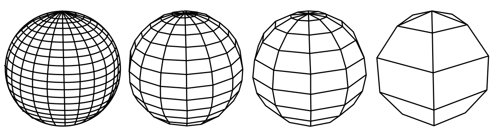
Figuur 10Meshing van dezelfde geometrie op verschillend detailniveau
3.2.1 GeoJSON
GeoJSON is een populaire codering voor geospatiale vectorgegevens. GeoJSON wordt breed ondersteund, ook in de meeste implementaties van API’s die voldoen aan de OGC API Features Standard. Echter, GeoJSON heeft beperkingen die het gebruik ervan in bepaalde geospatiale toepassingscontexten verhinderen of beperken. Zo is GeoJSON bijvoorbeeld beperkt tot WGS 84-coördinaten, ondersteunt het alleen de oorspronkelijke Simple Features geometrie-types en heeft het geen concept om features te classificeren op basis van hun type.
Elke IFC-instantie wordt na conversie een GeoJSON feature. De properties van deze feature kan men gebruiken om de IFC-entiteit en de attributen weer te geven.
Vertaling van BIM naar GEO kan resulteren in een kleinere bestandsgrootte. Maar wanneer het BIM-model veel impliciete geometrie bevat, beschreven door een functie, resulteert het expliciet maken van deze geometrie, beschreven door grenzen, juist in een toename van de bestandsgrootte.
model
Bestandsgrootte IFC (KB)
Bestandsgrootte GeoJSON 1:1 mapping (KB)*
A20 Corridor
7.787
2.094
aisc_sculpture_param
314
4.206
ifcbridge-model01
14.817
26.049
ifcbridge-model04
55
296
ifcbridge-model05
25
205
tabel_chairs
705
48.641
kievitsweg_R25
13.706
65.386
Een voorbeeld tool om van ifc naar geojson te converteren is ifc2gis converter
3.2.2 CityGML en CityJSON
Het is ook mogelijk om een 1-op-1 vertaling naar de CityGML (JSON encoding) te maken. Het datamodel van CityGML geeft de optie om IFC types te vertalen naar CityGML types. Zo heeft CityGML bijvoorbeeld de types "Building", "BuildingPart" en "Buildingroom" voor een gebouw-model of "Bridge", "BridgePart" en "BridgeFurniture" voor een brug-model. Gebruik van deze types bij de 1:1 mapping geeft meer betekenis aan de dataset dan de directe GeoJSON vertaling. De IFC-attributen kunnen direct worden vertaald naar de CityGML "attributes".
3.2.3 Complicaties
Zoals vermeld kunnen veel viewers en analyse software de 1:1 vertaalde GeoJSON, CityJSON of CityGML bestanden openen. Ondanks dat in CityJSON/CityGML het mogelijk is om extra betekenis van het model aan te duiden geldt voor al deze modellen dat analyses maar beperkt kunnen worden toegepast. Analysesoftware verwacht vaak een specifiek datamodel. Doordat het vertaalde model hier meestal niet aan voldoet, kan dit resulteren in trage, onbetrouwbare of niet functionele analyses.
Bijvoorbeeld: Een zonlichtsimulatie test alle vlakken die mogelijk zonlicht ontvangen. Bij een shell extractie zal deze analyse snel gedaan kunnen worden, zie shell extractie, omdat de buitenkant van een bouwwerk bekend is. Bij een directe 1 op 1 vertaling is dat niet het geval en zal deze analyse op alle oppervlaktes van het model gedaan worden. Dit resulteert een traag proces dat mogelijk niet succesvol is.
Een ander probleem is dat door het expliciet maken van de impliciete IFC geometrie, de 1:1 mappings bestanden erg zwaar kunnen zijn. Een stedelijk model gevuld met deze soort modellen zal veel problemen kunnen geven. IFC modellen hebben soms een kleinere bestandsgrootte en goed geoptimaliseerde IFC of IFCZIP modellen kunnen zelfs enkele malen kleiner zijn.
*Enkel de IfcBeam, IfcColumn, IfcCovering, IfcCurtainWall, IfcDoor, IfcMember, IfcPlate, IfcRoof, IfcSlab, IfcWall, IfcWallStandardCase, IfcWindow classes en gerelateerde attributen zijn overgezet
Een beperkte remedie voor deze problemen is een gefilterde 1:1 mapping. Hierbij worden alleen de objecten die deel uitmaken van de buitengevel van een gebouw naar de GIS encoding omgezet. Dit kan op een aantal verschillende manieren geïmplementeerd worden maar de meest voorkomende maakt gebruik van een object attribuut (bijvoorbeeld isExternal in IFC). Dit is een gemakkelijke en snelle filtering en zal tijdens de conversie weinig problemen opleveren. Echter vertrouwt deze methode op het correcte gebruik van de attributen door de makers van het model. Het correcte gebruik van attributen kan niet altijd worden gegarandeerd (mensen maken fouten, zijn onbekend met het attribuut of het belang ervan) en mogelijk moet daarom het resulterende model gecorrigeerd worden. Een detectie met behulp van raycasting zoals LoD4.2 van de IfcEnvelopeExtractor is complexer en trager maar wordt niet beïnvloed door het correct gebruik van attributen.
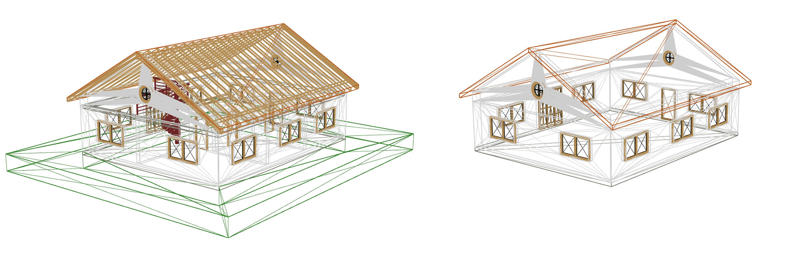
Figuur 11Wireframe representatie die het verschil tussen een gefilterde (rechts) en ongefilterde (links) 1:1 vertaling/mapping weergeeft
De filtering binnen de 1:1 mapping kan verder door worden gezet dan alleen de filtering van externe objecten. Zo heeft de IfcEnvelopeExtractor als output LoDe.1. Dit is een non-standaard output die alleen de externe surfaces van een BIM model bevat. Dit kan worden gezien als een hybride GIS model dat tussen een 1:1 mapping en shell extractie in valt. Deze hybdride modellen hebben geen volumetrische objecten zoals in 1:1 mappings modellen. Net zoals schil modellen hebben deze hybride modellen een relatief klein aantal surfaces. De hybride modellen hebben ook een kleine bestandsgrootte. Ze onderscheiden zich echter weer van schil modellen doordat ze niet lucht-dicht (waterdicht) volumetrisch zijn. Voor sommige GIS gerelateerde operaties zijn deze modellen echter een uitkomst.
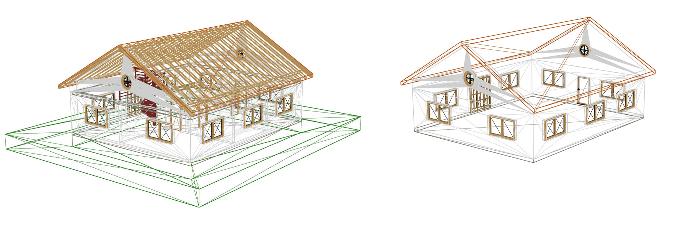
Figuur 12Wireframe representatie die het verschil tussen een e.1 representatie (rechts) en ongefilterde (links) 1:1 vertaling/mapping weergeeft
3.3 Shell extractie
Een bestand dat volledig een GIS data model volgt, kan alleen worden gecreëerd door een vorm van shell extractie. Bij shell extractie wordt een schil model gemaakt van één of meer BIM modellen. De shell extractie draagt bij aan een betere interoperabiliteit, hoewel hierbij een deel van de oorspronkelijke data verloren gaat. Dit geldt zowel voor de geometrie als de attributen. Volumetrische externe objecten zoals wanden (buiten muren) en daken worden oppervlaktes die deel zijn van een volumetrische schil. Interne elementen kunnen volledig vervallen. Dit proces is dus ook niet omkeerbaar.
Figuur 13Een wireframe representatie van een BIM model (links) en een exterieur GIS model (rechts).
Aanvullend is shell extractie een complex proces waarbij problemen kunnen optreden, mede afhankelijk van de kwaliteit van de input modellen. Schil modellen met een hoge precisie kunnen alleen gecreëerd worden indien de input BIM modellen voldoen aan strenge eisen. Deze eisen zijn niet alleen semantisch maar ook geometrisch. Dit maakt het lastig om deze eisen af te dwingen met een Informatie Levering Specificatie (ILS/IDS). Zelfs als alle eisen nageleefd worden zijn er situaties waarbij het schil model niet correct gemaakt kan worden.
Schil modellen met een lagere nauwkeurigheid of precisie stellen lagere eisen aan het input BIM model. Zo kunnen blok modellen of voxelisaties worden gemaakt van bijna alle BIM modellen, ook van schets/klad modellen. Hoe hoger de verwachte precisie van het GIS model, hoe strenger de eisen aan het input model en hoe complexer het proces om de schil extractie te creëren.
Het genereren van schil modellen van BIM bestanden is momenteel vooral beschikbaar in experimentele, onderzoeks software. Verschillende methodes worden nog steeds (door)ontwikkeld en onderzocht. Er is nog geen standaard methode voor deze converteer processen. De beschikbare software oplossingen werken op basis van verschillende methodes en kunnen daardoor ook andere output genereren op basis van dezelfde BIM input. Daarnaast werkt niet alle shell extractie software volgens het LoD framework dat in GIS wordt aangehouden. Zo genereert de toepassingBIMShell alleen een hoge kwaliteit schil en een voxelisatie. De toepassing IfcEnvelopeExtractor volgt een aangepaste intepretatie van het LoD framework van Biljecki et al.. Output kan daardoor verschillen tussen verschillende toepassingen en software pakketten.
Noot: Aanbeveling voor shell-extractie standaard?
Ondanks deze problemen leveren deze schil modellen gegenereeerd op basis van een BIM bron ook veel voordelen. De resulterende modellen hebben een kleine bestandsgrootte en worden ondersteund door vrijwel alle beschikbare GIS software. Deze modellen zijn daarnaast ook de enige modellen die voor complexe GIS analyses gebruikt kunnen worden.
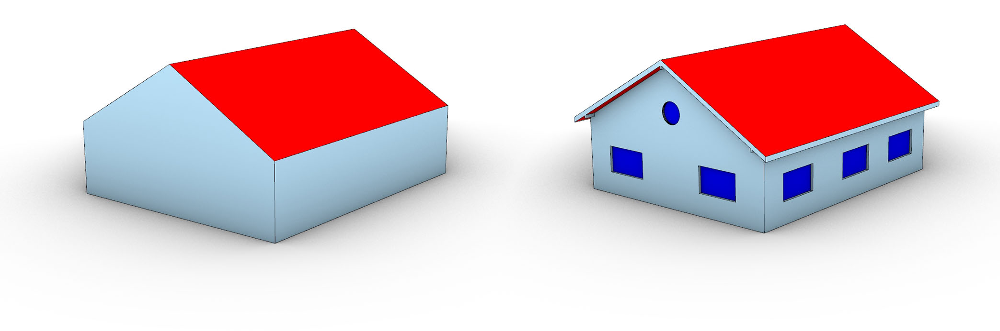
Figuur 14De hoogste kwaliteit beschikbare modellen in 3DBAG zijn LoD2.2 modellen (links). GIS geometrie op basis van BIM modellen zou aanvullende LoD3.2/3.3 (rechts) kunnen leveren.
Deze schil modellen zijn niet alleen waardevol voor de realisatie of analyse van het gebouw dat is omgezet (ook in relatie tot de omgeving) maar zij kunnen ook worden gebruik om bestaande stedelijke modellen aan te vullen of te verrijken. De kwaliteit van BIM modellen is hoger dan die van remote-sensing metinging (zoals laserscans) waarop de meeste stedelijke modellen zijn gebaseerd. De GIS modellen van een BIM bron kunnen daardoor dus ook een hogere kwaliteit/meer detail hebben. GIS schil modellen van een BIM bron kunnen aanvullend worden gebruikt in stedelijke GIS modellen. Daarnaast kan een BIM model sneller worden omgezet naar een GIS schil model dan dat de in-situ metingen meestal worden gedaan die ook nog omgezet moeten worden naar een GIS model. Daardoor kunnen de modellen ook gebruikt worden om een stedelijk model sneller te updaten. Een belangrijke voorwaarde hiervoor is dat de BIM modellen van deze nieuwe gebouwen beschikbaar zijn.
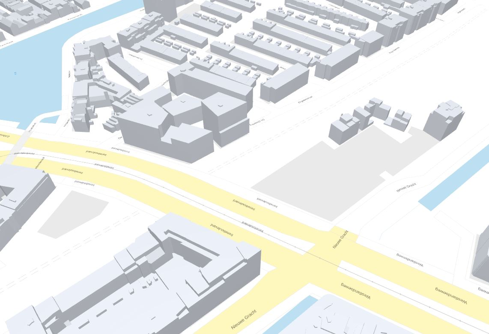
Figuur 15De spoorzone van Delft is een gebied waar veel nieuwbouw plaatsvind en laat zien dat 3DBAG vertraagd update. Twee gebouwen zijn wel aanwezig in 2Dbag (de grijze uitlijnen) maar een 3D representatie is nog niet beschikbaar. BIM gebaseerde GIS modellen kunnen hier een uitkomst bieden, indien BIM modellen beschikbaar zijn.
4. Geometrie BIM naar GEO
4.1 Impliciete en expliciete geometrie
Geometrie van BIM en GEO kan impliciet of expliciet zijn. Impliciete geometrie is geometrie die volledig is uitgeschreven, zoals alle coördinaten van de vertices, edges, faces en curves. Er is geen procedure of wiskundige berekening nodig om de geometrie op te stellen. Bij impliciete geometrie is dit anders. De geometrie is beschreven als een wiskundige of procedurele definitie. Pas bij rendering of conversie wordt geometrie vertaald naar vertices, edges, faces en curves.
In het open-BIM-formaat IFC, kan men zowel impliciete als expliciete geometry opslaan. Een software-gebruiker is zich niet altijd bewust van het gemodelleerde geometrie-formaat. In de GEO-formaten CityJSON, CityGML en GeoJSON maakt men voornamelijk gebruik van impliciete geometrie. Dit maakt het schema van Geo een stuk compacter dan dat van IFC. Complexe expliciete geometrie kan bij conversie naar impliciete CityJSON geometrie een groot bestandsformaat opleveren.
De geometriën van het BIM-model wordt vertaald naar Geo-geometriën. Waar nodig worden ifc-geometrieën omgezet naar solids of polygonen. Dit kan op verschillende detailniveaus. Een hoger detailniveau resulteert in een nauwkeurigere representatie en vergroot de bestandsgrootte.
Figuur 17Meshing van dezelfde geometrie op verschillend detailniveau
4.3 Shell extractie
Zoals eerder beschreven is shell extractie nu nog veelal beschikbaar in experimentele vorm voor het van BIM naar GIS brengen. Hierdoor zijn er nog geen standaard methodes ontwikkeld en gebruikt iedere software een eigen benadering. Dit hoofdstuk beschrijft de verschillende manieren waarop sommige schil modellen worden gemaakt door software. Dit is een selectie van de processen om een complex BIM model te converteren naar een versimpeld GEO model.
4.3.1 Voxelisatie
Een shell extractie methode die wordt gebruikt is voxelisatie. Voxelisatie benadert de vorm van een gebouw/bouwwerk met behulp van VOlumetriche piXELS (voxels). De resulterende vorm kan worden gezien als een blokkendoos representatie van het input model. Dit is op dit moment geen standaard GIS vorm die wordt ondersteund door de geaccepteerde LoD frameworks. Echter wordt dit wel als belangrijke output beschouwd. Voxelisatie kan namelijk aspecten van een gebouw opslaan die verder alleen in hele complexe LoD modellen beschikbaar is (LoD3+), zoals overhang en gevelopeningen. Voxelistatie is minder precies dan deze LoD3+ modellen maar het is wel een stuk robuuster en sneller. Daar waar een LoD3+ vorm niet gemaakt kan worden door een schil extractor kan mogelijk een voxelistatie wel gemaakt worden.
Voxelisatie komt met unieke problemen waarvoor nog geen standaard methode voor is opgesteld. Zo is de vorm van het gevoxeliseerde model afhankelijk van de voxelgrootte en de rotatie van de grid dat gebruikt werd tijdens de voxelisatie.
Van der Vaart et. all beschrijven het effect van verschillende voxelgrootte op het volume en oppervlakte van een extrene schil representatie van een IFC model. Hieruit komt naar voren dat voor het oppervlakte van de voetafdruk, het volume van de gehele schil en de visuele representatie beter wordt benaderd met kleinere voxels. Als de voxelgrootte correct wordt gekozen is de voxel vorm ook preciser in deze opzichten dan LoD2.2 representaties.
Op basis van de groote van een model wordt een "ideale" voxelgrootte gepresenteerd door Van der Vaart et. all. Deze waardes zijn mogelijk al verouderd, zo zijn elementen zoals bestandsgrootte niet meegenomen en ook is het onderzoek is gedaan met een oude versie van de IfcEnvelopeExtractor. Sinds dit onderzoek is de voxelisatie code versneld en dus is de process snelheid niet meer relevant in het onderzoek.
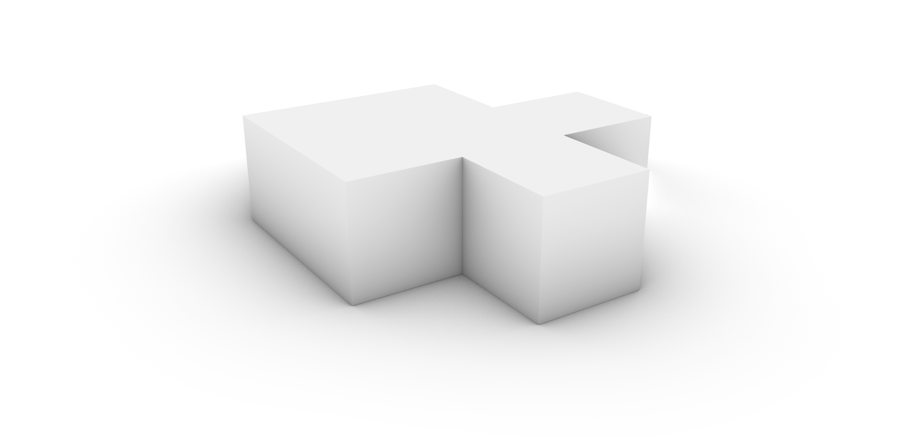
Figuur 18Animatie die het effect op de resulterende voxel schil laat zien bij verfijning van de gekozen voxelgrootte. De grootte gaat van 21.78m naar 0.09m door bij iedere stap de voxelgrootte door twee the delen. Het input model is het Schependomlaan model.
4.3.2 Hoge resolutie schil
5. Entiteit en Attribuut BIM naar GEO
Voor het transformeren van BIM- naar GEO-informatie is het mappen van entiteiten en attributen van belang. Waar geometrie vooral de vorm en locatie van een ding vastlegt, beschrijft de entiteit wat het ding is en bevatten attributen gegevens over eigenschappen zoals materiaal, functie, voorkomen, afmeting of classificatie. Bij de transformatie van BIM naar Geo moeten naast geometrie ook deze entiteiten en attributen correct worden vertaald tussen standaarden. Omdat BIM- en GEO-standaarden verschillen in datastructuur, niveaus van detail en semantische definitie is dit een uitdaging.
5.1 Entiteit mapping
Er zijn verschillende entiteit-mappingen ontwikkeld ter ontdersteuning van de conversie tussen BIM en Geo. Een vroeg voorbeeld is de Master Thesis Automatic generation of CityGML LoD3 building models from IFC models van Sjors Donkers (TU Delft, 2013). Daarnaast heeft de Universiteit Singapore een ifc2citygml mapping (2019) gemaakt. Ook de technische universiteit Munich voorziet ook in een mapping en converter van ifc naar Citygml 3.
De Universiteit van Hong Kong publiceert ifc naar cityGML mappingen in een bimgis omgeving, en de technische universiteit Athene heeft onderstaande mapping uitgewerkt.
De verschillende mappingen adresseren enkele of andere LOD's en/of attribuutmappingen en daarmee verschillende aspecten van een BIM naar GEO conversie. De verschillende benaderingen vullen elkaar aan en laten zien dat er geen algemeen geaccepteerde, uniforme mapping bestaat die alle aspecten van een BIM-naar-GEO-conversie afdekt.
Het is niet mogelijk om elke entiteit in IFC naar het basis CityGML-model te mappen. Men zal een keuze moeten maken in welke entiteiten hierbij van belang zijn. Het is mogelijk om één uitbreiding of meerdere uitbreidingen op CityGML te maken om IFC-entiteiten een plek te bieden. Dit is beschreven bij Biljecki in Extending CityGML for IFC-sourced 3D city models
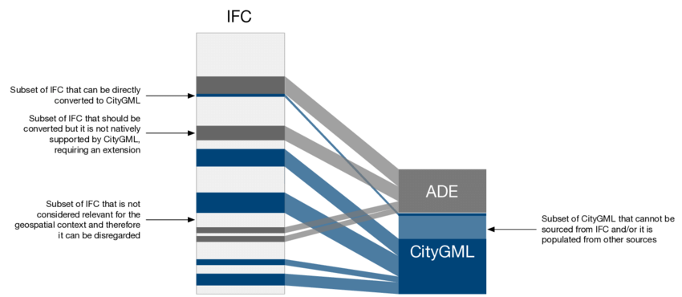
Een voorbeeld van een ADE voor IFC-entiteiten in CityGML is weergegeven in bijlage 2
Er zijn naast verschillende Level Of Details ook verschillende decompositie-niveaus die men vanuit één gedetailleerd BIM-model kan genereren. Zie bijlage 1
Zoals in de BIM basis ILS - hoofdstuk classificatieaangegeven dient men naast het juist gebruik maken van entiteiten ook gebruik te maken van classificatie in BIM. Ook dit kan men gebruiken om te mappen. Er zijn verschillend BIM Classificatie standaarden als: NL-SFB, NLCS, ETIM, NEN2767-4, IMBOR of soms domein-specifieke standaarden als SATO van Rijkswaterstaat voor Tunnels.
Noot: Entiteit-mapping op basis van Entiteit of op basis van Clasificatie
5.2 Mapping van Attributen
Entiteitmapping beschrijft hoe objecttypen uit een BIM-model worden gekoppeld aan objecttypen in een GEO-model, terwijl attribuutmapping beschrijft hoe de eigenschappen van deze objecten worden vertaald en overgenomen tussen beide modellen.
Hier zijn verschillende opties.
1-op-1 mapping
Processing:
Many-to-one mapping / aggregatie
One-to-many mapping
Afgeleide of berekende attributen
Transformaties tussen hiërarchische niveaus
Externe bronnen
5.2.1 1-op-1 mapping
Sommige attributen kan men direct, 1-op-1, mappen. Zo komt het attribuut "name" van een "IfcBuilding" eovereen met het attribuut "naam" van een "IMBOR:Gebouw". Beide attributen hebben dezelfde betekenis en kunnen daarom zonder aanvullende transformatie aan elkaar worden gekoppeld. De 1-op-1 mappingen vormen vaak een zeer beperkt deel van een totale attribuuttransformatie. Door verschillen in doel, structuur en detailniveau tussen BIM- en GEO-informatiemodellen moeten veel attributen worden afgeleid, geaggregeerd of via aanvullende transformatieregels worden bepaald.
5.2.2 Many-to-one mapping
Een model kent bijvoorbeeld het attribuut: "Lengte", "Breedte", "hoogte". Een ontvangend model kent bijvoorbeeld "afmetingen" (l,b,h) IMBOR.
Bijvoorbeeld "straat", "huisnummer", "postcode", Bij een ander model een attribuut "adres".
5.2.3 One-to-many mapping
Objecttype = fietspad in BIM. In GEO is dit CityGML functie = fietspad en type verharding = asfalt.
Name = "Bank type B12 groen" in IMBOR: objecttype: Bank, typeaanduiding, kleur, groen
NLCS-naam is ook een goede hiervoor.
5.2.4 Afgeleide of berekende attributen
meerder buildingstoreys + geometrie wordt gebouwhoogte in BIM
De inhoud van de netto ruimten en de products wordt het Bruto Inhoud of er kan een BVO van berekend worden.
5.2.5 Transformaties tussen hiërarchische niveaus
Zowel in GEO- als BIM-informatiemodellen komen verschillende decompositieniveaus voor. Attributen van objecten op een hoger decompositieniveau kunnen worden afgeleid of geaggregeerd van objecten op een lager decompositieniveau. Daarbij is vaak sprake van een specifieke relatie tussen een attribuut van een samengesteld object en een attribuut van één of meerdere onderliggende objecttypen waaruit dat object is opgebouwd.
Zo kan een objecttype "elementverharding" op een lager decompositieniveau bestaan uit een band, trottoirkolkdeksels en bestrating. Het attribuut "formaat" van een hoger decompositieniveau betreft het formaat van de stenen of tegels in het bestratingsvlak. Het betreft niet het formaat van een band of een trottoirkolk waaruit het object elementverharding ook bestaat. Een decompositieniveau lager kan het keiformaat van de bestrating afgeleid worden van de hele stenen waaruit het bestratingsvlak bestaat.
Expliciete afleidings- of aggregatieregels zijn nodig, waarin wordt vastgelegd van welk onderliggend objecttype en attribuut de waarde op een hoger decompositieniveau wordt afgeleid.
Bij een conversie van IFC naar CityGML is het niet altijd mogelijk om alle benodigde informatie uitsluitend uit het IFC-model af te leiden. Externe bronnen kunnen onder meer worden ingezet voor het aanvullen van ontbrekende attributen, het bepalen van classificaties, het afleiden van functies of het verrijken van objecten met contextinformatie. Voorbeelden hiervan zijn basisregistraties, topografische datasets, adressen- en gebouwenregistraties, hoogtebestanden etc.
In dit figuur betekent "0" de informatie die niet van BIM naar GEO hoeft te gaan. Het getal "1" staat voor CityGML en "2" voor een aanvulling op CityGML in de vorm van een ADE. Het getal "3" staat voor de externe bronnen die knnen ondersteunen in het genereren van CityGML. De letters "a" staan voor de directe 1 op 1 mappingen en "b" voor de procesmappingen.
Onderstaand voorbeeld laat zien hoe al deze routes binnen één conversie van BIM naar GEO gebruikt worden. In onderstaand voorbeeld worden meubels buiten beschouwing gelaten voor conversie ("0"). Voor de entiteit raam bestaat een 1 op 1 mapping naar CityGML ("1a"). Het aantal verdiepingen zal berekend kunnen worden om in CityGML te vertalen ("1b"). Het materiaaltype van een object kan een 1 op 1 mapping naar een CityGML ADE zijn ("2a"), het aantal toegangspunten van een kamer een procesmapping naar een ADE ("2b"). Tenslotte is het aantal bewoners alleen vanuit externe bronnen ("3") toe te voegen.
Een voorbeeldresultaat van bovenstaande attribuutmapping is hieronder weergegeven. Een aantal attributen op gebouwniveau zijn basis CityGML. Een aantal aanvullende ADE properties voorzien meer informatie over dit gebouw na mapping.
Geo- en BIM-objecten kunnen hetzelfde fysieke bouwwerk beschrijven, maar vanuit verschillende perspectieven en detailniveaus. Gedurende de gehele levenscyclus van een bouwwerk, van ontwerp en realisatie tot beheer, renovatie en sloop, hebben deze objecten met elkaar een relatie. Wijzigingen in BIM-objecten, zoals aanpassingen aan afmetingen, functies of constructieve elementen, hebben gevolgen voor de geo-objecten. Een consistente koppeling tussen geo- en BIM-data is daarom essentieel om informatie gedurende de levenscyclus van een object actueel en betrouwbaar te houden.
Wanneer een functionele behoefte bestaat, bijvoorbeeld men wil wonen, dan wordt er een technische uitwerking gemaakt van een object die voorziet in de functionele behoefte. Bijvoorbeeld er wordt een woning ontworpen. De technische entiteit wordt vaak in BIM uitgewerkt. Na verschillende ontwerp-iteraties wordt de entiteit gerealiseerd en voorziet het, bij goed ontwerp, in de functionele behoefte.
Een entiteit kan een maatregel en een status van deze maatregel meekrijgen. Op basis van deze maatregel en status kan de BIM naar GEO conversie tot verschillende acties leiden.
In BIM definieert men een maatregel welke men uit kan voeren op een entiteit. Dit kan volgens de GWSW maatregel ontologie een van de volgende maatregelen zijn:
Aanleggen
Buiten gebruik stellen
Conserveren
Onderhouden
Onderzoeken
Renoveren
Repareren
Vervangen
Verwijderen
Een maatregel heeft daarnaast een status. Deze status kan zijn:
Gepland
In Uitvoering
In Voorbereiding
Uitgevoerd
Vervallen
Zowel de maatregel als de status is nodig om te weten op welke manier men een entiteit van BIM naar GEO moet brengen.
Voor een bouwwerk waaraan de maatregelaanleggen is gekoppeld en de status hiervan Uitgevoerd is, dient men een GEO-entiteit te maken.
Voor een bouwwerk waaraan de maatregelBuiten gebruik stellen, Conserveren, Onderhouden, Onderzoeken, Renoveren, Repareren, of Vervangen is gekopppeld, en de status hiervan Uitgevoerd is, dient men een GEO-entiteit te wijzigen
Voor een bouwwerk waaraan de maatregelverwijderen is gekoppeld, en de status hiervan Uitgevoerd is, dient men een GEO-entiteit te Verwijderen (of in historie te plaatsen)
Wanneer de statusvervallen is vindt er geen BIM naar GEO conversie plaats. Bij de statusGepland, In Uitvoering en In Voorbereiding hangt de BIM naar GEO conversie af van het feit of de GEO-omgeving plangegevens wil ontvangen.
Bij de integratie van BIM naar GEO ontstaat een uitdaging rondom de levenscyclus van objecten. Een geplande geometrie uit een BIM-model wordt gecombineerd met de bestaande GEO-registratie, maar zonder correcte toepassing van tijds- en levenscyclusattributen blijft de geometrie van bestaande bouwwerken die in ontwerp weg zouden gaan zichtbaar. Hierdoor worden de huidige en toekomstige situatie overlappend weergegeven.
Bovenstaand voorbeeld is gemaakt met een toepassing die gebruik maakt van 3D Tiles volgens de [3DTILES] Standaard. Deze standaard kent de functie "style.show". Hierin kan men met een boolean (true/false) per object (feature) aangeven of deze wordt weergegeven. Het brengen van BIM naar GEO en het correct weergeven van temporele (ontwerp)situaties is geen opgave voor een standaard, maar voor de applicaties en toepassingen.
6.2 Levenscyclus versies
Wanneer men BIM naar GEO brengt kan bestaande GEO-data wijzigigen. Er kunnen nieuwe objecten ontstaan, er kunnen objecten verdwijnen of er kunnen nieuwe versies van bestaande GEO-objecten ontstaan. Ook is het in theorie mogelijk om een BIM-versie van een GEO-object te modelleren.
Onderstaand voorbeeld toont een manier waarop meerdere versies van een bouwwerk gemodelleerd kunnen worden. Een "nen3610:begingeldigheid" geeft aan wanneer een object is ontstaan. Een "nen3610:eindgeldigheid" beschrijft wanneer een object niet meer geldig is. Wanneer een object geen waarde heeft voor "nen3610:eindgeldigheid" bestaat het object. Wanneer een bouwwerk verwijderd wordt ontstaat een nieuwe versie die een "Status", "Buiten Gebruik" heeft met een waarde "nen3610:begingeldigheid" die overeenkomt met de "nen3610:eindgeldigheid" van de versie die niet meer in gebruik is.
Figuur 25Voorbeeld- van een bouwwerk dat in een nieuwe versie buiten gebruik is.
Onderstaand voorbeeld toont GEO- en BIM-versies van een bouwwerk. Een Bouwwerk in een BIM-omgeving kan een plan zijn voor een bestaand Bouwwerk die bestaat in een (GEO-)registratie. Het plan kan dan een versie zijn van het bouwwerk. Wanneer het plan (BIM) daadwerkelijk gerealiseerd is, is de versie van het plan "einde geldigheid". Er ontstaat dan een versie die een gerealiseerd plan is met een "begin geldigheid". Dit gerealiseerde plan "invalideert" een versie in de GEO-omgeving en genereert een versie in de GEO-omgeving.
Figuur 26Voorbeeld van een bouwwerk met GEO- en BIM-versies. Waarbij een gerealiseerde BIM-versie een GEO-versie genereert.
7. BIM naar Geo-datasets
Op het moment van schrijven worden BIM-modellen beperkt ingezet als bron voor het voeden van geo-basisregistraties en landelijke of regionale geo-datasets. In de praktijk worden deze registraties veelal bijgewerkt via afzonderlijke inmetingen, administratieve processen of andere gegevensbronnen. De toenemende beschikbaarheid van kwalitatief hoogwaardige open BIM-modellen biedt een kans om dit proces te verbeteren. Door relevante gegevens uit BIM-modellen op een gestandaardiseerde en geautomatiseerde wijze te ontsluiten, kunnen geo-datasets actueler, consistenter en efficiënter worden gecreëerd en beheerd, terwijl dubbele gegevensverzameling wordt verminderd.
Om een BIM-model te kunnen converteren naar een geo-dataset, moet het voldoen aan vooraf gedefinieerde modeleisen. Als de benodigde geometrie, attributen of classificaties in BIM ontbreken, kan geo-informatie voor een bepaalde geo-dataset niet of niet volledig uit het BIM-model worden afgeleid. De modeleisen voor BIM verschillen per geo-dataset. Dit komt doordat elke geo-datasets een eigen informatiemodel, objectdefinities en attribuutvereisten heeft. Het beoogde doel (de target geo-dataset) bepaalt daarom welke informatie in het BIM-model aanwezig moet zijn om een succesvolle conversie mogelijk te maken.
Onderstaande tabel geeft een aantal belangrijke landelijke datasets weer inclusief het informatiemodel dat wordt gebruikt en het Level Of Detail van de geometrie. De onderstaand weergegeven tabel is niet limitatief:
Overzicht van een aantal nationale/regionale datasets
De vereisten die per GEO-dataset gesteld moeten worden aan een BIM-model zijn op te delen in twee categorieën: geometrische vereisten en semantische vereisten. De geometrische vereisten beschrijven de benodigde geometrische representatie en het vereiste detailniveau (LOD), terwijl de semantische vereisten betrekking hebben op de benodigde attributen, classificaties en eigenschappen voor de betreffende geo-dataset. De vereisten stelt men in Informatie Levering Specificaties (ILS'en).
Het opdelen van Informatie Levering Specificaties in afzonderlijke specificaties maakt hergebruik van informatie-eisen mogelijk. Door geometrische eisen en semantische eisen apart te definiëren, kunnen onderdelen van een ILS opnieuw worden toegepast voor verschillende geo-datasets. Hierdoor hoeft niet voor iedere nieuwe toepassing een volledige ILS opnieuw te worden opgesteld en kunnen bestaande specificaties efficiënter worden beheerd en onderhouden. Zo kan een ILS Gebouw voor het maken van een LOD0_vlak worden hergebruikt voor BGT en BAG (ondanks dat de conversie iets anders is). Ook een generieke ILS basisregistraties waarin concepten zijn opgenomen als objectbegintijd, objecteindtijd, identificatie, relatieveHoogteligging en status kan worden hergebruikt bij meerdere registraties.
Onderstaand overzicht laat zien hoe verschillende ILS'en in samenhang kunnen worden toegepast voor landelijke datasets. Het dient als een verkennend toepassingsprofiel en is bedoeld als inspiratie voor verdere uitwerking.
ILS Geometrie
ILS Informatiemodel
Dataset
ILS Gebouw LOD0_vlak, ILS Weg LOD0_vlak, ILS Brug LOD0_vlak, ILS Spoor lod0_lijn, ILS Terrein LOD0_vlak, ILS Water LOD0_vlak ILS meubilair LOD0_punt
ILS basisregistratie, ILS BGT
BGT
ILS Gebouw LOD 0_vlak
ILS basisregistratie, ILS BAG
BAG
ILS Gebouw LOD 1.2_volume ILS Gebouw LOD 1.3_volume ILS Gebouw LOD 2.2_volume
ILS basisregistratie, ILS BAG
3D BAG
ILS Weg LOD 1.2_multivlak ILS Gebouw LOD 1.3_volume ILS Gebouw LOD 2.2_volume
ILS basisregistratie, ILS 3DBasisvoorziening
3D basisvoorziening
ILS Weg LOD 0_lijn
ILS NWB
NWB
ILS Bebouwing LOD 0_vlak ILS Bebouwing LOD 0_lijn ILS Bebouwing LOD 0_punt etc.
ILS 1 GIS
1 GIS
ILS Gebouw LOD0_vlak, ILS Weg LOD0_vlak, ILS Brug LOD0_vlak, ILS Spoor lod0_lijn, ILS Terrein LOD0_vlak, ILS Water LOD0_vlak ILS meubilair LOD0_punt
ILS IMBOR
IMBOR
8. Eisen aan model en mapping
8.1 Eisen aan het BIM-model
Een succesvolle transformatie van een BIM model naar een GIS bestandsformaat begint bij het maken van de juiste afspraken vóór de start van het modelleerwerk. Zonder duidelijke kaders bestaat de kans dat een BIM-model te complex of kwalitatief ontoereikend is. Dit kan de mogelijkheden voor gebruik in een geografische informatiesystemen en conversie naar GEO reduceren.
Duidelijke procesafspraken en kwaliteitscontroles vergroten de betrouwbaarheid, consistentie en bruikbaarheid van de data. Hierbij kan men gebruikmaken van de ISO 19650 reeks, de internationale norm voor informatiemanagement in de gebouwde omgeving. Deze norm biedt de processen om vast te leggen wie welke informatie moet leveren, wanneer en hoe.
8.2 Landelijke BIM-afspraken
In Nederland bestaan landelijke BIM-afspraken. Deze afspraken zorgen voor een eenduidige werkwijze en bevorderen interoperabiliteit, datakwaliteit en de mogelijkheid tot samenwerking. De landelijke afspraken zijn opgebouwd uit drie samenhangende onderdelen conform de ISO 19650; de Informatie Levering Specificatie (ILS), het Informatie Protocol (IP) en het BIM Uitvoerings Plan (BUP). Samen beschrijven zij de informatie-eisen, de afspraken over informatiebeheer,verantwoordelijkheden en eigendom en de inrichting van de BIM-samenwerking.
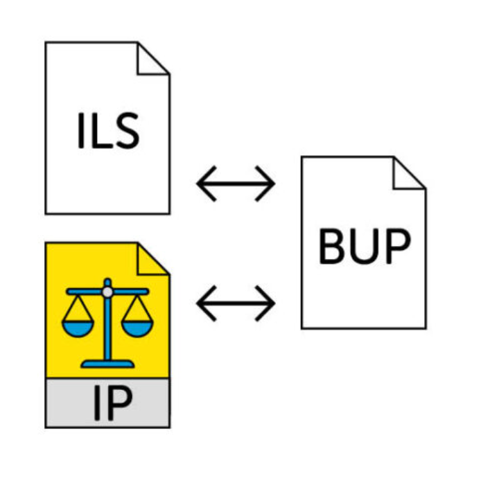
Figuur 27
Informatie Levering Specificatie (ILS), Informatie Protocol (IP) en Bim Uitvoerings Plan (BUP) als contractuele afspraak over data-creatie, -overdracht en -gebruik.
Bron: DigiGO.
In deze praktijkrichtlijn wordt voornamelijk de InformatieLeveringsSpecificatie (ILS) toegelicht, omdat deze de belangrijkste randvoorwaarden bevat voor de technische conversie van BIM naar GEO.
DigiGO beheert een aantal templates en sectorbrede standaarden zoals; de BIM basis ILS (met een focus op de bouw),de BIM basis Infra (met een focus op infrastructuur), de ILS Ontwerp&Engineering, het nationaal model Informatie Protocol, het nationaal template BIM UitvoeringsPlan. Deze richtlijnen en templates bieden een set afspraken en handvatten voor het gestructureerd en eenduidig uitwisselen van digitale informatie. De landelijke (sector) afspraken kunen binnen organisaties en projecten verder uitgewerkt worden en deze afpsraken kan men in contracten vastleggen.
Figuur 28
Samenwerking in BIM op basis van sectorafspraken
Het hebben van gestandaardiseerd BIM is essentieel voor BIM naar GEO conversie.Hoewel er zowel aan de BIM-zijde als aan de GEO-zijde afspraken beschikbaar zijn, ontbreekt een verbindende laag tussen beide werelden. Een BIM-model dat volgens de BIM Basis ILS is opgebouwd en een GEO-dataset volgens IMBGT kunnen daardoor (nog) niet zonder aanvullende afspraken één-op-één op elkaar worden aangesloten. Een toekomstig toepassingsprofiel kan deze koppeling ondersteunen door afspraken te maken over objectidentificatie, geometrie, semantiek en informatie-uitwisseling.
ILS-onderdelen waarover men afspraken dient te maken voor BIM naar Geo
Bestandsnaamconventies: Bestandsnaamconventies beschrijven afspraken voor het eenduidig identificeren en beheren van informatiebestanden. De bestandsnaam bevat hierbij alleen noodzakelijke metadata voor beheer en uitwisseling en is niet bedoeld om inhoudelijke informatie over objecten of eigenschappen vast te leggen. Deze informatie dient onderdeel te zijn van het model of de dataset zelf.
Eenheden: Het consistent gebruik van eenheden voorkomt schaalfouten bij BIM naar GEO conversies. Het juist interpreteren van eenheden kan men bereiken door vaste afspraken te maken en na te leven over het gebruik van eenheden en/of de eenheden in het model of metadata te duiden.
Georeferentie: Er wordt per project een methode van georeferentie gekozen. Dit is cruciaal om BIM modellen correct te koppelen aan GIS data. Meestal gaat het om het RD-stelsel (EPSG:28992) en NAP hoogte (EPSG:EPSG:5709). Dit wordt projectafhankelijk vastgelegd. Zie Georefereren GeoBIM.
Semantische typering en classificatie: Voor een betrouwbare BIM naar GEO-conversie is het noodzakelijk dat objecten zijn toegewezen aan een passende entiteit uit een nationaal of internationaal informatiemodel, zoals IFC. Door middel van classificatie kan een object verder worden gespecificeerd en eenduidig worden gecategoriseerd volgens een gestandaardiseerde systematiek. In Nederland kan men hiervoor bijvoorbeeld NL-SfB, NLCS of ETIM voor gebruiken.
Attributen en properties: Objecten krijgen afgesproken vaste attributen en properties, zoals:
Status Object (In ontwerp, In aanleg, In gebruik, Buiten gebruik)
Een IFC-model bevat metadata over het eigen model, zoals opsteller, gebruikt schema etc.
Metadata naast IFC, in DCAT/GeoDCAT formaat, kan publicatie, catalogisering, vindbaarheid, interpreteerbaarheid en hergebruik bevorderen. Dit sluit aan op de aanbeveling in Technical guidlines for digital building logbooks van Ecorys, TNO, Arcadis en Contecht.
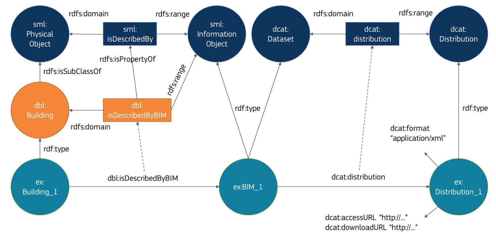
Figuur 29
Semantisch model fysieke objecten en informatie objecten
Voorkomen van doublures en doorsnijdingen:
Er is sprake van een doublure als hetzelfde fysieke object op dezelfde locatie én binnen een aspectmodel, coördinatiemodel of project vaker voorkomt. Er is sprake van een doorsnijding als twee objecten deels door elkaar heen steken.elangrijk voor clashcontrole en correcte weergave in gecombineerde BIM GIS omgevingen.
Wat betekent dit praktisch voor GeoBIM gebruik?
Door deze afspraken wordt een BIM-model geschikt gemaakt voor koppeling en hergebruik binnen een GEO-omgeving. Objecten kunnen automatisch worden herkend en vertaald naar geo-objecten doordat de geometrie, semantiek, classificatie en metadata eenduidig zijn vastgelegd. Hierdoor neemt de noodzaak voor handmatige bewerkingen af en wordt het mogelijk om BIM-informatie betrouwbaarder te gebruiken voor beheer, analyse en besluitvorming.
Concreet betekent dit:
Georeferentie zorgt ervoor dat BIM en GEO ruimtelijk op elkaar aansluiten Een object uit het BIM-model (bijvoorbeeld een brug of leiding) komt op de juiste positie in een GIS-kaart terecht.
Classificatie en IFC-typering zorgen ervoor dat objecten herkenbaar zijn Een IfcWall, IfcPipeSegment of IfcBridgePart kan worden gekoppeld aan het juiste GEO-objecttype (CityGML:WallSurface, CityGML:Pipe (Utility Network ADE), CityGML:Bridgepart).
Attributen en properties zorgen ervoor dat relevante informatie behouden blijft
Bijvoorbeeld materiaal, status, levensfase of beheerinformatie kan worden meegenomen naar een GEO-dataset.
Gestandaardiseerde metadata maakt datasets vindbaar en begrijpelijk
Gebruikers weten wat het model bevat, wie het heeft gemaakt, welke versie het is en waarvoor het geschikt is.
Voorkomen van doublures en doorsnijdingen voorkomt interpretatieproblemen
Objecten worden niet dubbel weergegeven of verkeerd gecombineerd in BIM/GIS-omgevingen
Clashcontroles worden betrouwbaarder
→ Doordat objecten eenduidig zijn gemodelleerd en correct zijn gegeorefereerd, kunnen geometrische conflicten tussen BIM-objecten of tussen BIM- en GEO-informatie beter worden opgespoord.
De inhoud van eisen aan een BIM- en/of GEO-model komen uit een volgende behoefte. De ISO 19650 gaat uit van een ketenbenadering: informatie wordt niet alleen voor de eigen organisatie gecreëerd, maar juist voor uitwisseling en hergebruik door andere partijen. Dit is essentieel voor GeoBIM, waar gegevens geschikt moeten zijn voor conversies tussen BIM en GIS zonder verlies van informatie.
Behoefte/Eis
Voorbeeld
Organizational Information Requirement (OIR)
"Wij willen vastgoed beheren en daarom hebben wij informatie nodig"
Asset Information Requirements (AIR)
"Voor vastgoedbeheer hebben wij de gegevens nodig van materiaal, onderhoud, levensduur, constructie, gebruik"
Asset Information Model (AIM)
"In het asset beheersysteem kennen wij het "Object" "Gebouw" met de attributen "Materiaal, "levensduur", "Constructie" en "Gebruik" en wij kennen de "Activiteit" "Onderhoud" die een koppeling krijgt naar een gebouw."
Project Information Requirements (PIR)
Voor de renovatie van dit vastgoedproject hebben wij informatie nodig om het ontwerp, de realisatie en de toekomstige overdracht naar beheer mogelijk te maken."
Exchange Information Requirements (EIR)
"Deze bestaande assetinformatie en projectinformatie moet door deze betrokken partijen op afgesproken momenten en in afgesproken formats worden geleverd."
Project Informatie model (PIM)
"Tijdens het project wordt deze informatie vastgelegd in het Project Information Model. En materiaal, levensduur, constructie wordt naar het asset information model gestuurd"
Een ILS (informatie leveringsspecificatie) legt vast welke informatie, wanneer en door welke partij geproduceerd moet worden.
In Nederland wordt ILS (InformatieLeveringsSpecificatie) vaak gebruikt als een overkoepelende term, waardoor het soms zowel elementen bevat van wat volgens de Building Smart Terminologie IDM (Information Delivery Manual), IDS (Information Delivery Specification) en soms ook EIR (Exchange Information Requirements) worden genoemd. In een IDM wordt een EIR en IDS opgenomen.
Een Informatie Levering Specificatie conform het begrip IDS kan in mens- en/of computer-interpreteerbare vorm opgesteld worden. Voor het laatste zijn twee gangbare methoden:
BuildingSMART heeft de standaard Information Delivery Specification (IDS) ontwikkeld. Dit is een XML-bestand dat aangeeft welke data vastgelegd dient te worden en waar de data aan moet voldoen. Tegelijkertijd kan dit bestand gebruikt worden om IFC-bestanden te valideren tegen deze eisen in verschillende applicaties.
Vanuit Nederlandse en Europese normalisatie zijn respectievelijk de normen NEN 2660-2 en Building information modelling (BIM) - Semantic modelling and linking (SML) NEN-EN 17632 ontwikkeld. Hiermee is het mogelijk om, middels de Linked Data-standaard SHACL, restricties vast te leggen en door de computer te laten valideren.
Zo kan de voorwaarde dat elk object een maatregel en status dient te hebben als volgt worden vastgelegd conform IDS of in SHACL. (Zie bijlage E)
Om te voorkomen dat voor iedere ILS opnieuw nagedacht moet worden over objecten en kenmerken, is het sterk aan te raden om een standaard of ontologie te gebruiken als basis voor de ILS. Voorbeelden hiervan zijn de ILS O&E, IMBOR en de NLCS. Daarnaast helpt het gebruik van standaarden om de herkenbaarheid van de data te vergroten tussen verschillende disciplines.
Eisen voor shell extractie
De eisen aan het BIM-model voor een shell extractie zijn beperkt. Het is van belang dat georeferentie in het model aanwezig is. (IFCMapConversion).
Daarnaast dient er minimaal een IFCProduct aanwezig te zijn die geometrie bezit.
De extractie-software werkt voor de actieve schema's (2x3, 4 en 4x3)
De ILS/IDS voor deze beknopte eisenset zou kunnen zijn:
Nog in te vullen
Afhankelijk van het soort extractie gelden meer eisen.
Eisen voor 1 op 1 mapping:
De eisen voor een 1 op 1 mapping zijn al iets uitgebreider. Het is van belang dat georeferentie in het model aanwezig is. (IFCMapConversion).
Daarnaast dient er minimaal een IFCProduct aanwezig te zijn die geometrie bezit.
De extractie-software werkt voor de actieve schema's (2x3, 4 en 4x3).
Heb je IfcRoof nodig?
De extractie kan filteren op: IfcBeam, IfcColumn, IfcCovering, IfcCurtainWall, IfcDoor, IfcMember, IfcPlate, IfcRoof, IfcSlab, IfcWall, IfcWallStandardCase, IfcWindow. Wat betekent dit voor een ILS?
Daarnaast is een remedie voor de bestandgroote te filteren op isExternal property Wat betekent dit voor een ILS?
Toevoegen -> Welke datasets. BAG 2D
-> ILS -> IDS for making LOD 1.0 (BAG 2D) geometrie
-> Voor PAND-geometrie is alles nodig van IfcBuilding? -> Kan groter zijn dan Pand. Hoe dit te doen?
-> Voor PAND-attribuut is YearOfConstruction nodig (IfcPsetBuildingCommon) ILS?
LOD2.2 maakt Roofsurface, Groundsurface en Wallsurface. Het is handig als in het IFCModel IfcWall, IfcRoof en IfcSlab zit en
Daarnaast is IFCBuildingStorey handig.
Bij LOD 3.2
-> Hier moet raam aanwezig zijn:
-> Classificatie volgens NL-Sfb
(als classificatie = Nl-Sfb 31 raam -> dan moet entity = IfcWindow)
Een alignment ontology kan worden gebruikt om BIM naar GEO mappingen op een gestandaardiseerde en machineleesbare manier vast te leggen. In plaats van alleen een directe koppeling tussen entiteiten en attributen te beschrijven, legt een dergelijke ontology ook het type relatie vast, zoals een directe mapping, een procedurele afleiding, een mapping naar een ADE of een verrijking vanuit externe bronnen.
Hiermee wordt niet alleen vastgelegd welke informatie wordt gemapt, maar ook hoe deze informatie tot stand komt. Een alignment ontology ondersteunt daarmee een transparante, uitbreidbare en herbruikbare beschrijving van BIM-naar-GEO-conversies.
8.6.3 API Process
9. Toolkit
9.1 Handleiding/HowTo
Applicatie
BIM/IFC direct openen
1:1 vertaling
Gefilterde 1:1 vertaling
Shell extractie
CityGML LoD support
CityJSON LoD support
ESRI ArcGIS Pro
✅
✅
✅
❌
❌
❌
IFC2GeoJSON
❌
✅
✅
❌
❌
❌
Save Software FME
❌
✅
✅
❌
❌
❌
IfcConvert
❌
✅
✅
❌
❌
❌
BIMShell
❌
✅
✅
✅
❌
❌
IfcEnvelopeExtractor
❌
✅
✅
✅
✅
✅
✅ = volledige support
❌ = geen support
9.2 BIM bestanden in GIS omgeving brengen
9.2.1 ESRI ArcGIS Pro
9.3 1:1 vertaling/mapping
9.3.1 Save Software FME
9.4 Shell extraction
9.4.1 BIMShell
9.4.2 IfcEnvelopeExtractor
De IfcEnvelopeExtractor is een open source C++ applicatie die BIM modellen in de IFC encoding kan omzetten naar Wavefront OBJ, STEP en CityGML CityJSON. Deze omzetting is niet alleen een 1:1 omzetting van IFC naar een ander GIS bestandstype. De applicatie zet de geometrie van het input bestand om naar GIS representaties volgens de GIS syntax. De conversie volgt hierbij het LoD framework van Biljecki et al.. Aanvullend zijn er een aantal experimentele LoDs en een 1:1 conversie beschikbaar. De tool support de conversie van IFC naar in totaal 17 verschillende LoDs, zie appendix ... voor meer informatie.
De applicatie is toegankelijk via de GitHub pagina. Hier zijn de source code en gecompilde executables beschikbaar. De gecompilde executables zijn beschikbaar voor zowel Windows als Linux (Ubuntu). Gedetaillerde informatie over de methodes die ontwikkeld zijn in de code om de conversie uit te voeren, kan worden gevonden in het technische report van versie 0.2.6. Dit report is gebaseerd op een eerdere versie van de code, versie 0.3.x is de huidige versie, waarbij de dieper liggende logica gelijk of vergelijkbaar is gebleven.
Controle over de applicatie kan op twee manieren worden uitgeoefend, via een Graphical User Interface (GUI) of via een configuratie bestand (ConfigJSON). De GUI is makkelijker en sneller om mee te werken, zeker voor gebruikers die geen programmeer ervaring hebben. De GUI geeft echter enkel controle over een sub-set van alle beschikbare instellingen. Dit is gedaan om de menu's overzichtelijk te houden. De beschikbare instellingen zijn gekozen op basis van wat de meest gebruikte instellingen zijn. Als deze instellingen te beperkend zijn moet er met de ConfigJSON gewerkt worden. De ConfigJSON is een lijst met instellingen in een JSON encoding.
9.4.2.1 Workflow
9.4.2.1.1 bestands correctie
Niet ieder model kan door de IfcEnvelopeExtractor direct verwerkt worden. De software applicatie is ontwikkeld om te werken op veel verschillende modellen, maar niet ieder probleem kan ontweken worden. Daarom moeten modellen mogelijk handmatige gecorrigeerd worden voordat ze kunnen worden verwerkt. Er zijn aantal onderwerpen waarvan het aangeraden wordt om te controleren/corrigeren voor verwerking. Als alleen de buitenkant van het gebouw/bouwwerkt geexporteerd/converteerd moet worden hoeft alleen de georeferentie en het IfcClass gebruik gechecked te worden. Als ook de binnenkant geexporteerd/converteerd moet worden is het ook aangeraden dat de IfcSpace hiërarchie en de IfcBuildingStorey gerelateerde objecten gechecked worden.
Georeferencing
De IfcEnvelopeExtractor neemt de georeferentie over van het IFC bestand. Dit betekend dat als het model correct gegeorefereerd is dat het GIS model direct op de correcte locatie zal worden geplaatst. Echter is de aanwezigheid en kwaliteit van de georeferentie in IFC niet altijd gegarandeerd. Applicaties zoals IfcGref maken het mogelijk om correcte georeferentie data van een bestand te controleren en eventueel toe te voegen of te corrigeren. De online versie van IfcGref kan IFC bestanden van maximaal 100mb verwerken. Als de bestanden zwaarder zijn dan 100mb kan vanaf de GitHub pagina de code verkregen worden om de applicatie lokaal te gebruiken. De 100mb limiet is dan niet meer aanwezig.
Class gebruik
De IfcEnvelopeExtractor gebruikt maar een sub-set van de IfcClasses die beschikbaar zijn in een volledig IFC bestand. De classes die gebruikt worden zijn classes die tastbare objecten/geometrie vertegenwoordigen die ruimtes van elkaar scheiden. Bijvoorbeeld wanden, deuren en ramen. Deze objecten scheiden kamers van elkaar, maar ook de kamers binnen een gebouw en de lucht aan de buitenkant van een gebouw. Meubels en leidingen zijn ook tastbaar, maar scheiden niet ruimtes van elkaar, dus meestal spelen deze geen rol bij het overzetten van IFC naar GIS.
Standaard gebruikt de applicatie twaalf verschillende classes: IfcBeam, IfcColumn, IfcCovering, IfcCurtainWall, IfcDoor, IfcMember, IfcPlate, IfcRoof, IfcSlab, IfcWall, IfcWallStandardCase, IfcWindow classes. Deze kleine selectie uit de 700+ classes is voor de meeste gebouwen genoeg om een correcte extractie uit te voeren. Echter kan het zijn dat een gebouw andere classes gebruikt die belangrijk zijn voor de overzetting. In dat geval kan de lijst aangepast en/of uitgebreid worden via de GUI en de ConfigJSON. Ook zijn deze twaalf verschillende classes gekozen op basis van gebouwen, mogelijk hebben bruggen of tunnels andere eisen.
Deze filtering van object class is belangrijk om de processen die de applicatie uitvoert simpel te houden. Zelfs met correcte class selectie zijn dit zware processen die mogelijk traag en instabiel kunnen zijn. Het is daarom belangrijk dat de classes die geselecteerd zijn ook echt de functie uitvoeren waarvoor ze bedoeld waren. Als een IfcSlab wordt gebruikt om een weg te representeren die naast een gebouw ligt, dan heeft de applicatie maar een beperkte mogelijkheid om dit correct te detecteren als deel van de omligging en niet deel van het gebouw. Vaak zal dus deze weg worden gezien als deel van het gebouw, met alle gevolgen van dien. Een class waar vaak problemen mee optreden is de IfcBuildingElementProxy class. Deze class wordt vaak, incorrect, gebruikt voor alle objecten waarvan het onduidelijk is onder welke class ze eigenlijk behoren. De objecten die deze class gebruiken kunnen dus een combinatie zijn van voor de applicatie belangrijke en onbelangrijke objecten. De applicatie zal dus of deze objecten allemaal negeren (als er niet gefilterd wordt op IfcBuildingElementProxy) of allemaal gebruiken (als er wel gefilterd wordt op IfcBuildingElementProxy).
Het is belangrijk dat de classes in een bestand dus correct gebruikt worden. Alle classes die deel maken van een gebouw kunnen niet gebruikt worden om de omgeving te modelleren. Het gebruik IfcBuildingElementProxy wordt afgeraden. Als deze class wel gebruikt wordt, wordt het aangeraden om het gebruik ervan zoveel mogelijk te beperken. Ook is het belangrijk dat alle objecten die in die class gebruikt worden of wel belangrijk zijn voor de extractie, of allemaal onbelangrijk.
Als dit niet het geval is zal een IFC bestand met de hand moeten worden gecorrigeerd voordat de applicatie het bestand kan verwerken. Met de hand kunnen veel objecten verwijderd worden of de class type van een object veranderd worden.
IfcSpace gebruik
De IfcEnvelopeExtractor maakt het ook mogelijk om binnenruimtes te exporteren. Bij v3.0.x is dit nog steeds zwaar gebaseerd op de IfcSpace class in het IFC bestand. Een IFC bestand kan drie verschillende compositie type kamers hebben: COMPLEX, ELEMENT en PARTIAL. COMPLEX betekend dat de IfcSpace een groep of cluster van kamers/ruimtes representeert. ELEMENT betekend dat de IfcSpace een enkele kamer/ruimte representeert. PARTIAL betekend dat de IfcSpace een deel van een kamer/ruimte representeert. De applicatie gebruikt alleen de ELEMENT IfcSpace objecten.
In bijna ieder model waarbij kamers/ruimtes zijn gegroepeerd is de compositie type incorrect. Bijna alle IfcSpace objecten hebben type ELEMENT. Het maakt geen verschil of deze objecten gebruikt worden om daadwerkelijk een kamer/ruimte te representeren of om een groep kamers/ruimtes te groeperen. Vaak is dit niet de fout van de modelleur maar de fout van de BIM software. Applicaties zoals Revit zullen altijd incorrect IfcSpace objecten schrijven naar IFC.
Dit zorgt er helaas voor dat als er complexe groeperingen van ruimtes in een IFC bestand aanwezig zijn dat deze altijd met de hand zullen moeten worden gecorrigeerd als interieur output gewild is. Als geen interieur output gewild is dan kunnen de foutive IfcSpace objecten negeert worden. Net zoals bij de tastbare objecten negeerd de applicatie objecten die niet direct nodig zijn.
IfcBuildingStorey gerelateerde objecten
De IfcEnvelopeExtractor maakt het mogelijk om verdiepingen of informatie gerelateerd aan de verdiepingen te exporteren. Voor LoD0.2 en LoD0.3 export word een horizontale doorsnede gemaakt door het gebouw om een oppervlakte, of groep van oppervlaktes te maken. Voor LoD0.2 wordt dit door alle gebruikte objecten van het IFC model gedaan. Maar voor de LoD0.3 doorsnede worden alleen de objecten gebruikt die via IfcRelContainedInSpatialStructure objecten aan de verdieping (IfcBuildingStorey) gerelateerd zijn.
Deze relatie tussen verdieping/IfcBuildingStorey en de andere producten is soms incorrect en moet gecorrigeerd worden als dat mogelijk is. Het beste is als dit direct gecorrigeerd kan worden in de bron waar de modellen vandaan komen. Als deze relatie verkeerd is in IFC dan is het waarschijnlijk ook incorrect in Revit, ArchiCAD of andere bron. Als het bronbestand niet beschikbaar is dan kan als alternatief een IFC editor gebruikt worden. Het veranderen van de relatie tussen objecten en verdiepingen is relatief makkelijk en door veel IFC editors ondersteunt.
Een groter probleem is als een object met de goede verdieping is gerelateerd maar zo hoog is dat het meer dan een enkele verdieping overbrugt. Over het algemeen wordt het afgeraden dit soort objecten in een IFC model te hebben. Er is tot nu toe geen oplossing voor dit probleem gevonden. Het is in theorie mogelijk om hetzelfde object via twee (of meer) verschillende IfcRelContainedInSpatialStructure te relateren aan twee (of meer) verschillende verdiepingen. Dit is echter geen standaardoplossing en de meeste IFC viewers en editors zullen hier niet goed mee omgaan.
9.4.2.1.2 Applicatie instellen
Zoals eerder vermeld kan de applicatie op twee manieren ingesteld worden, via de GUI en via de ConfigJSON. Als eerste behandelen we de GUI. Aanvullend worden via de ConfigJSON alle instellingen behandeld die niet via de GUI configureerbaar zijn.
GUI
Figuur 31De GUI van de IfcEnvelopeExtractor bestaat uit een menu (links) en een console (rechts). Via het menu kunnen de meest voorkomende instellingen worden aangepast. Via de console communiceerd de software met de gebruiker
De GUI is opgedeeld in groepen van instellingen die aan elkaar gerelateerd zijn. In de afbeelding hierboven zijn de groepen weergegeven.
A: Lint menu
Het inladen van config pre-sets
Zetten van voorkeuren
Samenvatting weergeven van JSON instellingen (ook als deze niet beschikbaar zijn in de GUI)
Verwijderen van JSON instellingen die niet beschikbaar zijn in de GUI
Locatie aangeven van .exe en default pre-sets
B: Algemene I/O instellingen
Instellen van input en output locaties
C: Verwachte output LoD en encoding
De verwachte LoD output
De verwachte format output aanvullend aan CityJSON
D: Aanvullende instellingen
Interieur & exterieur output
Voetafdruk en Dakuitlijn output
voetafdruk getrimde volumetrische objecten
Het gebruik van het IsExternal IFC attribuut
E: Numerieke parameters
De voxelgrootte (belangrijk voor ray-casting en filtering processen)
De voetafdrukhoogte
F: Geometrische parameters
De gebruikte objecten
De simplificatie van de objecten
De precisie/tolerantie
Gebruik van voxel pre-filtering
Er is ook een simpele versie van de GUI beschikbaar. Deze is vooral gemaakt voor het laden van pre-set bestanden.
Figuur 32De simpele versie van de GUI voor de envelope extractor
Een uitgebreide beschrijving van de GUI kan (in het engels) worden gevonden op de GitHub van de EnvExtractor.
ConfigJSON
9.4.2.1.3 Samenvoegen van GIS bestanden
De output van de BIM2Geo converter is een model van een enkel bouwwerk, of (afhankelijk van de BIM model) een relatief kleine cluster van gebowuen. Om dit model in de omgeving the plaatsen is het mogelijk om de CityJSON output samen te voegen met een CityJSON tegel van bijvoorbeeld de 3D bag. Op dit moment is het nog niet mogelijk om dit direct met de BIM2Geo converter te doen. Een alternatieve oplossing is het gebruiken van cijo (CityJSON/io).
9.4.2.2 Output specificatie
De IfcEnvelopeExtractor ondersteunt 12 verschillende "reguliere" LoD. Deze LoD volgen een aangepaste LoD framework dat zowel het framework van de CityGML2.0/3.0 standaard en van Biljecki et al. combineerd en op uitbreid. Een deel van de verschillen komt voort uit benodigde interpretatie van regels die niet duidelijk gedefinieerd zijn in de gebruikte/bestaande frameworks. Aanvullend is het framework van Biljecki et al. gebaseerd op modellen die zijn gemaakt op basis in-situ metingen gecombineerd met 2D polygonen. Hier zitten andere beperkingen aan dan aan modellen gebaseerd op BIM. Hierdoor zijn niet alle aspecten van het framework passend.
Een deel van de volgende samenvatting van de output kan ook worden gevonden in het technische rapport van de IfcEnvelopeExtractor V0.2.6. Dit document geeft ook een uitgebreide uitleg over de methodes die zijn gebruikt om de abstractie modellen te creëren. Echter is versie V0.3.2 van de software beschikbaar tijdens het schrijven van dit document. V0.3.2 gebruikt een aantal andere regels en methodes. Daarnaast is ook de mogelijke output uitgebreid, LoD4 werd nog niet ondersteunt door v0.2.
Niet iedere LoD die beschikbaar is in het framework van Biljecki et al. wordt behandeld in deze lijst. Dat betekend niet dat ze niet belangrijk zijn, alleen dat de exctractor deze LoD niet als output genereerd.
9.4.2.2.1 LoD0.0
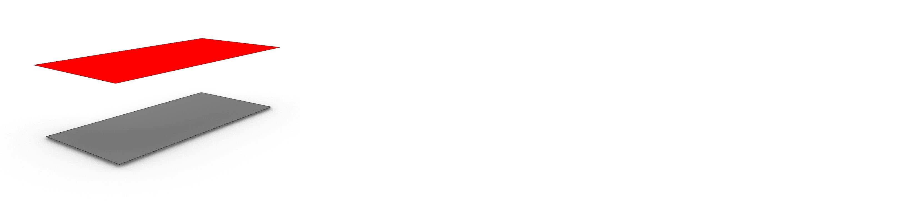
Figuur 33Visualisatie van LoD0.0 gebaseerd op het institute IFC model van IAI/KIT
2D bounding box representatie van het input BIM model.
De representatie bestaat uit:
Dak oppervlak
$n = 1$
Type: RoofSurface of +ProjectedRoofOutline als geen voetafdruk extractie is gekozen.
Het bovenoppervlak van de kleinst georiënteerde bounding box om het totale model heen.
Grond/voetafdruk oppervlak
$n = 1$
Type: GroundSurface
Het bovenoppervlak van de kleinst georiënteerde bounding box alle objecten die +-0.5 m zijn geplaatst van de voetafdruk
9.4.2.2.2 LoD0.2
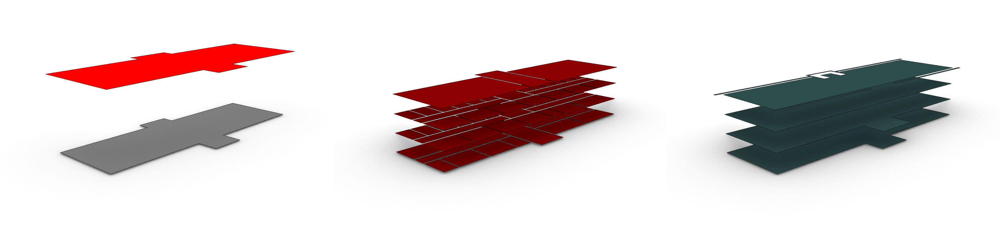
Figuur 34Visualisatie van LoD0.2 gebaseerd op het institute IFC model van IAI/KIT. Dak en voetafdruk (links), de kamers (midden) en de verdiepingen (rechts) zijn los weergegeven
Simpel 2.5D oppervlak representatie van het input BIM model waarbij ieder oppervlak een normaal richting heeft van (0,0,1). Het model is 2.5D tussen oppervlaktes van dezelfde bron. Overhangende delen zijn toegestaan tussen oppervlaktes die andere types hebben of een andere bron hebben (zoals verschillende verdiepingen).
De representatie bestaat uit:
Dak oppervlak
$n \geq 1$
Type: RoofSurface of +ProjectedRoofOutline als geen voetafdruk extractie is gekozen.
Een oppervlak dat is gemaakt door alle top oppervlaktes van de dak structuur to projecteren op de xy vlak. De geprojecteerde oppervlaktes die tegen elkaar rusten worden samengevoegd. Deze oppervlaktes worden op de voetafdruk hoogte geplaatst als geen voetafdruk output wordt gegenereerd. Als er wel voetafdruk output wordt gegenereerd worden deze oppervlaktes op de max z hoogte van het BIM model geplaatst.
Grond/voetafdruk oppervlak
$n \geq 1$
Type: GroundSurface
Een oppervlak dat is gemaakt door een sectie te maken door het hele IFC model ter hoogte van de voetafdruk z waarde. Horizontale oppervlaktes die dicht bij deze sectiehoogte liggen (±0.15m) worden ook aan deze selectie toegevoegd. De resulterende vlakke oppervlaktes worden samengevoegd. De binnenringen die schachten en vergelijkbare elementen representeren worden verwijderd. Deze representatie is identiek voor de LoD0.3 and 0.4 grond/voetafdruk oppervlak.
Verdiepingsoppervlak
Als IFC bestand IfcBuildingStorey objecten bevat $n \geq 1$ anders $n = 0$.
Type: FloorSurface
Oppervlaktes die zijn gemaakt door een sectie te maken door het hele IFC model ter hoogte van iedere verdieping. Horizontale oppervlaktes die dicht bij deze sectiehoogte liggen (±0.15m) worden ook aan deze selectie toegevoegd. De resulterende vlakke oppervlaktes worden samengevoegd.
Kamer oppervlak
Als IFC bestand IfcSpace objecten bevat $n \geq 1$ anders $n = 0$.
Type: +ProjectedCeilingOutline
Oppervlaktes die zijn gemaakt door, per kamer, de plafond oppervlaktes plat te projecteren op de minimale z hoogte van de kamer. Deze vlakke oppervlaktes worden samengevoegd om een oppervlak te maken per kamer.
9.4.2.2.3 LoD0.3
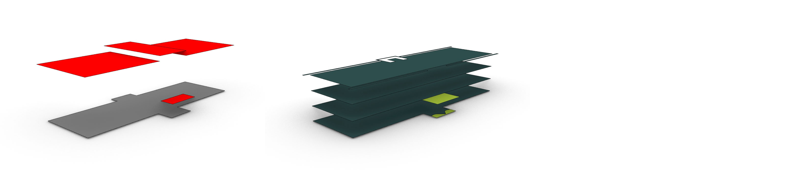
Figuur 35Visualisatie van LoD0.3 gebaseerd op het institute IFC model van IAI/KIT. Dak en voetafdruk (links) en de verdiepingen (rechts) zijn los weergegeven
2.5D oppervlak representatie van het input BIM model waarbij ieder oppervlak een normaal richting heeft van (0,0,1). Het model is 2.5D tussen oppervlaktes van dezelfde bron. Overhangende delen zijn toegestaan tussen oppervlaktes die andere types hebben of een andere bron hebben (zoals verschillende verdiepingen).
De representatie bestaat uit:
Dak oppervlak
$n \geq 1$
Type: RoofSurface
Oppervlaktes die zijn gemaakt op basis van de dak structuur van het input model. De top oppervlaktes van het dak worden geïsoleerd en gegroepeerd als ze elkaar aanraken of snijden. Per groep wordt een plat oppervlak gemaakt door deze groepen plat te projecteren, samen te voegen en op de top z hoogte te plaatsen van de originele groep. Overlap tussen de verschillende oppervlaktes wordt geëlimineerd door de lager gelegen oppervlaktes te trimmen.
Grond/voetafdruk oppervlak
$n \geq 1$
Type: GroundSurface
Een oppervlak dat is gemaakt door een sectie te maken door het hele IFC model ter hoogte van de voetafdruk z waarde. Horizontale oppervlaktes die dicht bij deze sectiehoogte liggen (±0.15m) worden ook aan deze selectie toegevoegd. De resulterende vlakke oppervlaktes worden samengevoegd. De binnenringen die schachten en vergelijkbare elementen representeren worden verwijderd. Deze representatie is identiek voor de LoD0.2 and 0.4 grond/voetafdruk oppervlak.
Verdiepings oppervlak
Als IFC bestand IfcBuildingStorey objecten bevat $n \geq 1$ anders $n = 0$.
Type: FloorSurface en OuterFloorSurface
Oppervlaktes die zijn gemaakt door een sectie te maken door het hele IFC model ter hoogte van iedere verdieping. Horizontale oppervlaktes die dicht bij deze sectiehoogte liggen (±0.15m) worden ook aan deze selectie toegevoegd. Voor ieder oppervlak wordt getest of het binnen of buiten het gebouw ligt. Per group worden de vlakke oppervlaktes worden samengevoegd.
9.4.2.2.4 LoD0.4
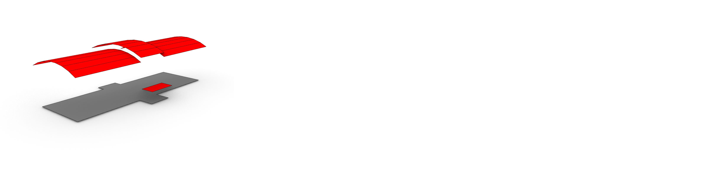
Figuur 36Visualisatie van LoD0.4 gebaseerd op het institute IFC model van IAI/KIT.
2.5D oppervlak representatie van het input BIM model waarbij ieder oppervlak dezelfde vorm behoud als de geometrische bron. Het model is 2.5D tussen oppervlaktes van dezelfde bron. Overhangende delen zijn toegestaan tussen oppervlaktes die andere types hebben of een andere bron hebben (zoals verschillende verdiepingen).
De representatie bestaat uit:
Dak oppervlak
$n \geq 1$
Type: RoofSurface
Oppervlaktes die zijn gemaakt op basis van de dak structuur van het input model. De top oppervlaktes van het dak worden geisoleerd en gegroepeerd als ze elkaar aanraken of snijden. Overlap tussen de verschillende oppervlaktes wordt geelimineerd door de lager gelegen oppervlaktes te trimmen.
Grond/voetafdruk oppervlak
$n \geq 1$
Type: GroundSurface
Een oppervlak dat is gemaakt door een sectie te maken door het hele IFC model ter hoogte van de voetafdruk z waarde. Horizontale oppervlaktes die dicht bij deze sectiehoogte liggen (±0.15m) worden ook aan deze selectie toegevoegd. De resulterende vlakke oppervlaktes worden samengevoegd. De binnenringen die schachten en vergelijkbare elementen representeren worden verwijderd. Deze representatie is identiek voor de LoD0.2 and 0.3 grond/voetafdruk oppervlak.
9.4.2.2.5 LoD1.0
Figuur 37Visualisatie van LoD1.0 gebaseerd op het institute IFC model van IAI/KIT.
3D bounding box representatie van het input BIM model.
De representatie bestaat uit:
Buitenschil
$n = 1$
Type: RoofSurface, GroundSurface of WallSurface
De kleinst georiënteerde bounding box om het totale model heen.
9.4.2.2.6 LoD1.2
Figuur 38Visualisatie van LoD1.2 gebaseerd op het institute IFC model van IAI/KIT. Buitenschil (links) en de kamers (rechts) zijn los weergegeven
2.5D volumetrische representatie van het input BIM model met unform vlakke boven en onder oppervlaktes.
De representatie bestaat uit:
Buitenschil
$n \geq 1$
Type: RoofSurface, GroundSurface of WallSurface
Volume kan gemaakt worden op twee manieren:
door het LoD0.2 dakoppervlak naar de grondhoogte te extruderen
door het LoD0.2 grondoppervlak naar de tophoogte van het gebouw te extruderen.
Binnenschil
Als IFC bestand IfcBuildingStorey objecten bevat $n \geq 1$ anders $n = 0$.
Type: CeilingSurface, FloorSurface of InteriorWallSurface
Volume dat per kamer is gemaakt door de LoD0.2 +ProjectedCeilingOutline represenatie te extruderen naar de tophoogte van de kamer.
9.4.2.2.7 LoD1.3
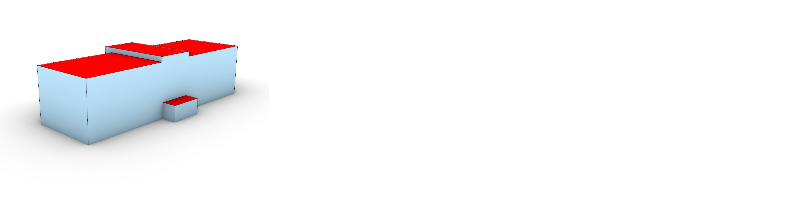
Figuur 39Visualisatie van LoD1.3 gebaseerd op het institute IFC model van IAI/KIT.
2.5D volumetrische representatie van het input BIM model met vlakke oppervlaktes. Ieder oppervlak heeft een normaal richting met een z-component dat gelijk is aan 1 of 0.
De representatie bestaat uit:
Buitenschil
$n \geq 1$
Type: RoofSurface, GroundSurface of WallSurface
Volume dat is gemaakt door de LoD0.3 dakoppervlaktes naar de grondhoogte te extruderen. De resulterende volumes worden samengevoegd. Het is mogelijk om dit volume bij te trimmen zodat de voetafdruk van dit volume overeen komt de de LoD0.2 voetafdruk.
9.4.2.2.8 LoD2.2
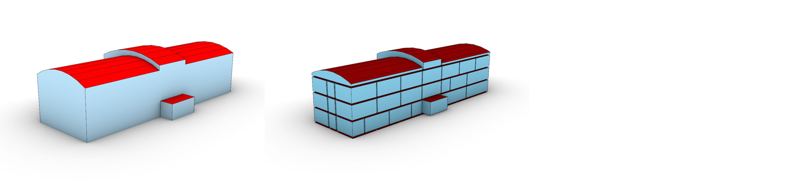
Figuur 40Visualisatie van LoD2.2 gebaseerd op het institute IFC model van IAI/KIT. Buitenschil (links) en de kamers (rechts) zijn los weergegeven
2.5D volumetrische representatie van het input BIM model.
De representatie bestaat uit:
Buitenschil
$n \geq 1$
Type: RoofSurface, GroundSurface of WallSurface
Volume dat is gemaakt door de LoD0.4 dakoppervlaktes naar de grondhoogte te extruderen. De resulterende volumes worden samengevoegd. Het is mogelijk om dit volume bij te trimmen zodat de voetafdruk van dit volume overeen komt de de LoD0.2 voetafdruk.
Binnenschil
Als IFC bestand IfcBuildingStorey objecten bevat $n \geq 1$ anders $n = 0$.
Type: CeilingSurface, FloorSurface of InteriorWallSurface
Volume dat per kamer is gemaakt door de plafondoppervlaktes van de kamer te extruderen naar de minimale vloer hoogte van de kamer.
9.4.2.2.9 LoD3.2
Figuur 41Visualisatie van LoD3.2 gebaseerd op het institute IFC model van IAI/KIT. Dak en voetafdruk (links) en de kamers (rechts) zijn los weergegeven
3D volumetrische representatie van het input BIM model.
De representatie bestaat uit:
Buitenschil
$n \geq 1$
Type: RoofSurface, GroundSurface, WallSurface, Window of Door
Volume dat is gemaakt door alle (deels) externe oppervlaktes te filteren met behulp van raycasting. Deze oppervlaktes worden met elkaar getrimd en de getrimde delen die aan de buitenkant van het gebouw liggen worden samengevoegd.
Binnenschil
Als IFC bestand IfcBuildingStorey objecten bevat $n \geq 1$ anders $n = 0$.
Type: CeilingSurface, FloorSurface of InteriorWallSurface
Volume dat per kamer is gemaakt door de IfcSpace vorm over te nemen.
9.4.2.2.10 LoD4.0
Figuur 42Visualisatie van LoD4.0 gebaseerd op het institute IFC model van IAI/KIT.
3D complex (geen schil) representatie van de objecten die de buitenkant van het input BIM model representeren. Dit kan worden gezien als de eerste stap in de creatie van LoD3.2. Waarbij LoDe.1 stap 2 is.
De representatie bestaat uit:
Complex
$n \geq 1$
Type: ieder IfcClass type dat in het model zit met voorafgaand een "+". Zoals bijvoorbeeld IfcWall -> +IfcWall
Groep van volumes die op twee verschillende manieren kan zijn verzameld:
Optie 1: Door de ruimte scheidende IFC objecten met het attribuut IsExternal = True te verzamelen.
Optie 2: Door met behulp van voxel assisted ray-casting de externe IFC objecten te verzamelen.
9.4.2.2.11 LoD4.1
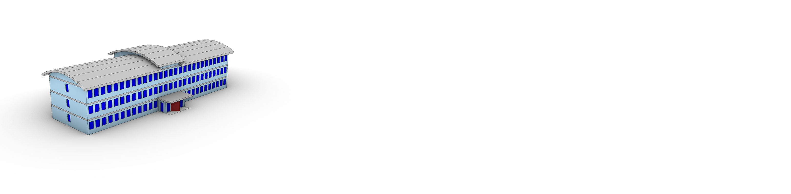
Figuur 43Visualisatie van LoD4.1 gebaseerd op het institute IFC model van IAI/KIT.
3D complex (geen schil) representatie van de ruimte scheidende objecten van het input BIM model.
De representatie bestaat uit:
Complex
$n \geq 1$
Type: ieder IfcClass type dat in het model zit met voorafgaand een "+". Zoals bijvoorbeeld IfcWall -> +IfcWall
Groep van volumes die is verzameld door de IFC objecten die zijn gekozen als ruimte scheidende objecten 1:1 over te zetten.
9.4.2.2.12 LoD4.2
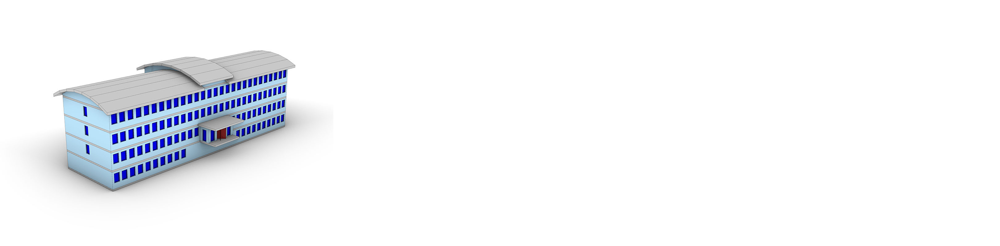
Figuur 44Visualisatie van LoD4.2 gebaseerd op het institute IFC model van IAI/KIT.
3D complex (geen schil) representatie van van het input BIM model.
De representatie bestaat uit:
Complex
$n \geq 1$
Type: ieder IfcClass type dat in het model zit met voorafgaand een "+". Zoals bijvoorbeeld IfcWall -> +IfcWall
Groep van volumes die is verzameld door de IFC objecten 1:1 over te zetten. Deze abstractie gebruikt geen versimpelde representatie van de ramen en deuren zoals de rest van de abstractie wel doet.
9.4.2.2.13 LoDe.1
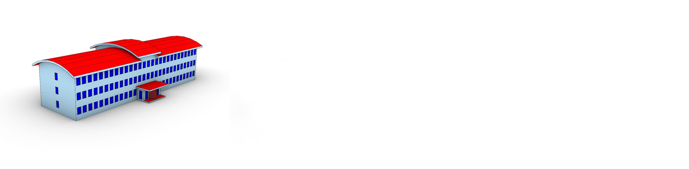
Figuur 45Visualisatie van LoDe.1 gebaseerd op het institute IFC model van IAI/KIT.
3D oppervlak representatie van het input BIM model. Dit kan worden gezien als de tweede stap in de LoD3.2 creatie. LoD4.0 kan worden beschouwd als de eerste stap.
De representatie bestaat uit:
Buitenschil
$n \geq 1$
Type: RoofSurface, GroundSurface, WallSurface, Window of Door
een verzameling oppervlakken die wordt gecreëerd door de LoD4.0-objecten te nemen en de buitenste oppervlakken te isoleren met behulp van een raycasting-proces. Dit is niet een volumetrisch model.
9.4.2.2.14 LoD5.0/LoDv
Figuur 46Visualisatie van LoD4.2 gebaseerd op het institute IFC model van IAI/KIT.
3D voxelisatie representatie van het model.
De representatie bestaat uit:
Buitenschil
$n \geq 1$
Type: RoofSurface, GroundSurface, WallSurface, Window of Door
Volume dat is gemaakt door alle externe oppervlaktes van de voxelisatie te isoleren. Op basis van van de soort IFC objecten die de voxels snijden kunnen deze oppervlaktes een type gegeven worden. oppervlaktes met hetzelfde type worden samengevoegd.
Binnenschil
$n \geq 1$.
Type: geen types geimplementeerd
Volume dat per kamer is door alle interne oppervlaktes van de voxelisatie te isoleren. Dit is niet gebaseerd op de IfcSpace objecten maar de ruimte scheidende objecten. De naam en attributen van de kamer kan wel worden gebaseerd op de IfcSpace objecten.
9.4.3 IFC2GeoJSON
A. Mapping tussen IFC en CityGML op verschillend decompositieniveau
Vanuit een gedetailleerd BIM-model is het mogelijk om op verschillende decompositieniveaus naar GEO te mappen.
Onderstaand voorbeeld laat zien dat vanuit eenzelfde IFC BIM-model van het Acerno Viaduct er verschillende transformaties mogelijk zijn.
Figuur 47
Attribuut mapping van een IFC-entiteiten en attributen naar BAG-entiteiten en attributen en IMBOR-entiteiten en attributen.
Figuur 48
ADE voor CityGML om IFC te borge
C. Levenscyclus
Onderstaande beelden visualiseren de flow van wijzigingen bij BIM en GEO.
Figuur 50Verandering in Wegen die bestaan uit weginrichtingselementent door vervanging weginrichtingselementen
C.3 Nieuwe weg in een bestaande weg
Men zou een nieuw voetpad kunnen maken. In onderstaande situatie is een nieuw voetpad gemaakt door:
Een deel van Tegelvlak 123 wordt verwijderd en tegelvlak 125 is aangelegd.
Een bestaand blijvend deel van Tegelvlak 123 blijft Tegelvlak 123, Het ander bestaand blijvend deel wordt Tegelvlak 124 omdat deze niet aangesloten zit aan tegelvlak 123.
Band 123 is verwijderd en Band 126 is aangelegd (1 op 1 vervanging).
Band 124 is verwijderd en Band 127 is aangelegd (1 op 1 vervanging).
Hoekstuk 123 is verwijderd en Hoekstuk 124 is aangelegd (1 op 1 vervanging).
Kaasstuk 123 is verwijderd en Kaasstuk 124 is aangelegd (1 op 1 vervanging).
Als deze maatregelen zijn Uitgevoerd.
Dan blijft het Voetpad 123 bestaan, maar krijgt een nieuwe versie en geometrie. Voetpad 125 ontstaat als nieuw object met de attributen en waarden van Voetpad 123. Voetpad 126 ontstaat met nieuwe attributen.
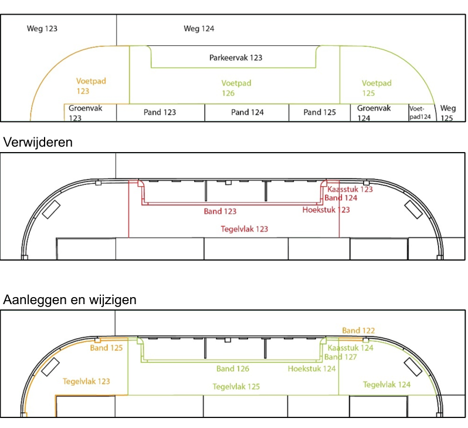
Figuur 51Verandering in Wegen die bestaan uit weginrichtingselementent door een nieuwe weg in een bestaande weg
C.4 Nieuwe weg in een bestaand onbegroeid terrein
Men zou nieuwe wegen kunnen maken in bestaand onbegroeid terrein. In onderstaande situatie is een nieuw situatie gemaakt door:
Onbegroeid terreindeel 123 is verwijderd en Teglvlak 123, 124 Band 125, 126, Hoekstuk 124, Kaasstuk 124 etc. wordt aangelegd.
Als deze maatregelen zijn Uitgevoerd.
Dan onstaan Weg 123, 124, 125, Voetpad 123, 124 Parkeervak 123, etc.
Deze sectie beschrijft de semantische mapping van IFC 4.3 naar IMBOR 2025 (InformatieModel Beheer Openbare Ruimte). In tegenstelling tot de CityGML-mapping, richt deze mapping zich op beheeraspecten van infrastructurele objecten.
De mapping is uitgewerkt voor:
Entiteiten (klassen): Brug (Vaste en beweegbare), Dek, Pijler
Attributen (properties): Attributen uit de IMBOR Startset
D.1 Mermaid Diagram: Attribuutflow
E. Voorbeeld ILS
in IDS:
<ids:idsxmlns:xs="http://www.w3.org/2001/XMLSchema"xmlns:xsi="http://www.w3.org/2001/XMLSchema-instance"xsi:schemaLocation="http://standards.buildingsmart.org/IDS http://standards.buildingsmart.org/IDS/1.0/ids.xsd"xmlns:ids="http://standards.buildingsmart.org/IDS"><!--Edited with usBIM.IDSeditor 2.4.8 (http://www.accasoftware.com)--><ids:info><ids:title>New ids file</ids:title></ids:info><ids:specifications><ids:specificationifcVersion="IFC4X3_ADD2"name="Een BIM-model bevat een IFC Task met een status"><ids:applicabilityminOccurs="1"maxOccurs="unbounded"><ids:entity><ids:name><ids:simpleValue>IFCTASK</ids:simpleValue></ids:name></ids:entity></ids:applicability><ids:requirements><ids:attributecardinality="required"><ids:name><ids:simpleValue>Status</ids:simpleValue></ids:name><ids:value><xs:restrictionbase="xs:string"><xs:enumerationvalue="In ontwerp" /><xs:enumerationvalue="In aanleg" /><xs:enumerationvalue="In gebruik" /><xs:enumerationvalue="Buiten gebruik" /></xs:restriction></ids:value></ids:attribute></ids:requirements></ids:specification><ids:specificationifcVersion="IFC4X3_ADD2"name="Een BIM-model bevat een IFC Task met een predefinedtype"><ids:applicabilityminOccurs="1"maxOccurs="unbounded"><ids:entity><ids:name><ids:simpleValue>IFCTASK</ids:simpleValue></ids:name></ids:entity></ids:applicability><ids:requirements><ids:attributecardinality="required"><ids:name><ids:simpleValue>PredefinedType</ids:simpleValue></ids:name><ids:value><xs:restrictionbase="xs:string"><xs:enumerationvalue="ADJUSTMENT" /><xs:enumerationvalue="ATTENDANCE" /><xs:enumerationvalue="CALIBRATION" /><xs:enumerationvalue="CONSTRUCTION" /><xs:enumerationvalue="DEMOLITION" /><xs:enumerationvalue="DISMANTLE" /><xs:enumerationvalue="DISPOSAL" /><xs:enumerationvalue="EMERGENCY" /><xs:enumerationvalue="INSPECTION" /><xs:enumerationvalue="INSTALLATION" /><xs:enumerationvalue="LOGISTIC" /><xs:enumerationvalue="MAINTENANCE" /><xs:enumerationvalue="MOVE" /><xs:enumerationvalue="OPERATION" /><xs:enumerationvalue="REMOVAL" /><xs:enumerationvalue="RENOVATION" /><xs:enumerationvalue="SAFETY" /><xs:enumerationvalue="SHUTDOWN" /><xs:enumerationvalue="STARTUP" /><xs:enumerationvalue="TESTING" /><xs:enumerationvalue="TROUBLESHOOTING" /></xs:restriction></ids:value></ids:attribute></ids:requirements></ids:specification><ids:specificationifcVersion="IFC4X3_ADD2"name="Een BIM-model heeft element"><ids:applicabilityminOccurs="1"maxOccurs="unbounded"><ids:entity><ids:name><ids:simpleValue>IFCBUILTELEMENT</ids:simpleValue></ids:name></ids:entity></ids:applicability><ids:requirements /></ids:specification><ids:specificationifcVersion="IFC4X3_ADD2"name="Er is een IFC RelassignsToProduct "><ids:applicabilityminOccurs="1"maxOccurs="unbounded"><ids:entity><ids:name><ids:simpleValue>IFCRELASSIGNSTOPRODUCT</ids:simpleValue></ids:name></ids:entity></ids:applicability><ids:requirements><ids:attributecardinality="required"><ids:name><ids:simpleValue>RelatingProduct</ids:simpleValue></ids:name></ids:attribute><ids:attributecardinality="required"><ids:name><ids:simpleValue>RelatedObjects</ids:simpleValue></ids:name></ids:attribute></ids:requirements></ids:specification></ids:specifications></ids:ids>
PREFIX nen2660: <https://w3id.org/nen2660/def#>
PREFIX sh: <http://www.w3.org/ns/shacl#>
PREFIX ex: <https://example.org/>
PREFIX rdfs: <http://www.w3.org/2000/01/rdf-schema#>
ex:ActivityShape
a sh:NodeShape ;
sh:targetClass nen2660:Activity ;
# transforms moet naar een Object verwijzen
sh:property [
sh:path nen2660:transforms ;
sh:class nen2660:Object ;
sh:minCount 1 ;
sh:message "Iedere Activity moet minstens 1 object veranderen." ;
] ;
# hasState moet één van de toegestane waarden zijn
sh:property [
sh:path nen2660:hasState ;
sh:in (
"In ontwerp""In aanleg""In gebruik""Buiten gebruik"
) ;
sh:minCount 1 ;
sh:maxCount 1 ;
sh:message "Iedere Activity moet precies één status hebben." ;
] ;
sh:property [
sh:path ex:activityType ;
sh:class ex:ActivityType ;
sh:minCount 1 ;
sh:maxCount 1 ;
sh:message "Iedere Activity moet precies één ActivityType hebben." ;
] .
ex:ADJUSTMENT,
ex:ATTENDANCE,
ex:CALIBRATION,
ex:CONSTRUCTION,
ex:DEMOLITION,
ex:DISMANTLE,
ex:DISPOSAL,
ex:EMERGENCY,
ex:INSPECTION,
ex:INSTALLATION,
ex:LOGISTIC,
ex:MAINTENANCE,
ex:MOVE,
ex:OPERATION,
ex:REMOVAL,
ex:RENOVATION,
ex:SAFETY,
ex:SHUTDOWN,
ex:STARTUP,
ex:TESTING,
ex:TROUBLESHOOTING
a ex:ActivityType .
F. Conformiteit
Naast onderdelen die als niet-normatief gemarkeerd zijn, zijn ook alle diagrammen, voorbeelden, en noten in dit document niet-normatief. Verder is alles in dit document normatief.